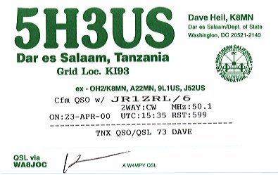

Flash ! DX


 |
|
|
|
 |
|
|
[Back Issues Apr.2023]
TIME:UTC(-09:00JST)
30.Apr.2023(15:00d)
--------------------------------------------------------------------------------
{DX(FT8/FT4=50.313MHz)=>AF/Pacif/Asia/JA's.../JA1/2/3/4/5/6/JS6-JA7/8/9/0
--------------------------------------------------------------------------------
02:19 3D2AG/01=CQ(RH91) 03:41 FK8CP/+03=CQ SEA 03:54 VK4FP/-14=CQ & JA's
04:38 VK4BLK/-08=CQ & JA's 05:06 VK4HJ/-14=CL BH8DKD 05:12 XV1X/+12=CQ & JA's
05:50 VK6ZLX/-07=CQ & JA's 08:55 VK8DR/-10=JA's 08:56 VK8JM/-13=JA's
09:04 VK4FNQ/-06=JA's 09:22 VK4CH/-01=JA's 09:23 VK8AW/-19=CL 4S7VG
09:27 VK6NH/-04=CQ EU 09:15 4S7VG/-15=QSO & JA's 09:43 3B8CW/-16=JA's
10:02 VK4KEE/-12=CL BG8BXM 10:16 VK8TH/-06=JA's 10:17 3B8HK/-12=JA's
10:38 3W3B/+01=CQ(OK46) 10:38 8Q7KB/-14=JA's 10:47 3B9FR/+02=JA's
+
* Open to other station & area
+
10:48 9K2GR/JA2 10:55 4X4DK/JS6 11:14 ZS4TX/JS6
+
--------------------------------------------------------------------------------
{DX(FT8=50.313MHz & Q65=50.275MHz) Report from Kochi(PM63)= TNX JA5FFJ}
--------------------------------------------------------------------------------
0530 VK6CPU/+02 0533 VK6ZM/-06 0650 4S7VG/-14 0653 VK4FNQ/-06
0655 VK4WDM/-24 0706 VK6NH/-13 0732 3B9FR/-11 0817 FK8CP/-14
0827 3D2AG/-12 0844 VK8JM/-15 0901 VK8DR/-05 1035 VK8TH/-12
1043 9K2GR/-21 1102 8Q7KB/-20
--------------------------------------------------------------------------------
TIME:UTC(-09:00JST)
29.Apr.2023(15:00d)
--------------------------------------------------------------------------------
{DX(FT8/FT4=50.313MHz)=>Pacif/Asia/JA's.../JA1/2/3/4/5/6/JS6-JA7/8/9/0
--------------------------------------------------------------------------------
03:34 FK8CP/-11=CQ SEA 03:48 VK4BLK/-19=JA's 03:50 3D2AG/-15=CQ
04:22 VK4KEE/+02=JA's 04:34 VK7ZTA/-15=JA's 04:37 VK3FZ/-12=CQ & JA's
04:50 VK3DUT/-16=JA's 05:15 VK5AYD/-05=JA's 06:14 VK4UH/-17=JA's
06:29 VK4FNQ/-04=CQ 08:08 VK6CPU/-09=CQ ME 08:08 VK4UV/-21=JA's
08:56 VK8JM/-08=JA's 08:57 VK8MS/-17=JA's 09:16 VK8DR/-10=JA's
10:35 VK6KXW/-08=CQ & JA's 10:52 VK6IR/-19=CQ 10:53 7Z1SJ/-20=CQ & JA's
11:03 VK6OX/-18=CQ
+
* Open to other station & area
+
10:40 A71VV/JA1-6 10:45 9K2GR/JA2-6
--------------------------------------------------------------------------------
{DX(FT8=50.313MHz & Q65=50.275MHz) Report from Kochi(PM63)= TNX JA5FFJ}
--------------------------------------------------------------------------------
0316 FK8CP/-20 0328 VK4WDM/-07 0345 VK4BLK/-02 0422 VK4KEE/+00
0427 VK7ZTA/-16 0430 VK3FZ/-07 0442 VK3DUT/-18 0443 VK3BD/-10
0445 VK3TG/-18 0511 VK5AYD/-01 0514 VK5BC/-08 0520 VK4OO/-16
0530 VK5PO/-15 0626 VK4FNQ/-03 0740 3D2AG/-22 0805 VK4UV/-21
0858 VK8JM/-17 0858 VK8DR/-20 0900 VK4FJ/-19 0900 VK4QG/-14
0900 VK8MS/-16 0956 VK6KXW/-18 1003 9K2GR/-20
--------------------------------------------------------------------------------
TIME:UTC(-09:00JST)
28.Apr.2023(15:00c)
--------------------------------------------------------------------------------
{DX(FT8/FT4=50.313MHz)=>AF/Pacif/Asia/JA's.../JA1/2/3/4/5/6/JS6-JA7/8/9/0
--------------------------------------------------------------------------------
03:19 VK4UH/-05=JA's 03:24 VK4WTN/-04=CQ & JA's 03:29 VK4SU/-18=JA's
03:42 VK4DCM/-19=JA's 03:45 3D2AG/+10=CQ 04:10 VK4ZPU/-19=CQ
04:14 VK5GF/-15=CQ 04:25 E51BQ/+00=CQ & QSO=JA's 04:40 FK8CP/-01=CQ SEA
04:52 VK3HY/-19=JA's 05:19 VK4KX/-14=CL HL4GAH 05:52 3W1T/+05=CQ(OK33)
05:58 VK4KEE/+03=CQ & JA's 06:01 YC0BJJ/-05=QSO & JA's 06:34 VK4FNQ/-06=CQ & JA's
08:24 VK5JR/-16=JA's 08:49 VK6ZLX/+00=CQ & JA's 09:04 VK4WDM/-11=JA's
09:29 7Z1SJ/-14=CQ(LL25) 09:42 VK8DR/-04=JA's 10:55 VK2ZQ/-18=JA's
+
* Open to other station & area
+
--------------------------------------------------------------------------------
TIME:UTC(-09:00JST)
27.Apr.2023(15:00d)
--------------------------------------------------------------------------------
{DX(FT8/FT4=50.313MHz)=>AF/Pacif/Asia/JA's.../JA1/2/3/4/5/6/JS6-JA7/8/9/0
--------------------------------------------------------------------------------
02:45 VK4EKA/-10=JA's 02:49 VK4ZPU/+05=CQ & JA's 02:55 VK6KXW/-12=JA's
03:35 VK6OX/-13=JA's 03:44 VK6IR/-16=CQ & JA's 04:01 VK4WTN/-13=JA's
04:04 FK8CP/+06=CQ SEA 05:11 3D2AG/+15=CQ & JA's 05:48 VK4WDM/-02=JA's
06:30 VK4FNQ/+02=JA's 06:51 VK4KEE/-04=CQ & JA's 08:32 YB2MDU/-14=CQ & JA's
09:41 VK8DR/-09=JA's 09:52 VK8JM/-16=CL 7Z1SJ 09:53 VK8RR/-07=JA's
+
* Open to other station & area
+
07:10 FR4OO/JA6 07:18 3B8FA/JA6 08:02 3B8CW/JA6 08:50 4S7AB/JA4
09:04 7Z1SJ/JS6
+
--------------------------------------------------------------------------------
{DX(FT8=50.313MHz & Q65=50.275MHz) Report from Kochi(PM63)= TNX JA5FFJ}
--------------------------------------------------------------------------------
0310 VK4ZPU/-15 0334 VK6OX/-18 0402 VK4WTN/-05 0404 FK8CP/-17
0511 3D2AG/-04 0631 VK4FNQ/-24 0649 FR4OO/-19 0657 YB5QZ/-16
0716 3B8FA/-14 0832 YB2MDU/-15 0857 VK4WDM/-21 0941 VK8DR/-19
0943 VK8AW/-19 0952 VK8RR/-19
--------------------------------------------------------------------------------
TIME:UTC(-09:00JST)
26.Apr.2023(15:00d)
--------------------------------------------------------------------------------
{DX(FT8/FT4=50.313MHz)=>AF/Pacif/Asia/JA's.../JA1/2/3/4/5/6/JS6-JA7/8/9/0
--------------------------------------------------------------------------------
02:31 3D2AG/-18=CQ(RH91) 02:59 VK4WDM/-02=CQ & JA's 03:01 VK4FB/-19=QSO & JA's
03:04 VK4FNQ/+04=CQ & JA's 03:19 VK4GDW/+01=JA's 03:34 VK4EKA/+02=JA's
03:34 VK4ZPU/+03=CQ & JA's 03:35 VK4WIS/-04=JA's 03:35 FK8CP/+05=CQ SEA
03:39 VK6CPU/-12=JA's 03:41 KH6AQ/-20=QSO & JA's 03:55 VK4YH/-03=JA's
04:04 ZL3NW/-13=CQ 04:10 ZL3RC/-16=CQ & JA's 04:18 VK4TMT/-04=QSO & JA's
04:23 NH6JC/-13=CQ & JA's 04:24 ZL1AKW/-19=CQ 04:26 VK4RF/+01=JA's
04:31 VK4UN/-11=QSO & JA's 04:52 ZL1RS/-07=JA's 05:04 VK4SN/+02=JA's
05:37 VK4HJ/+02=JA's 05:47 VK2TRD/-03=JA's 06:03 VK4KEE/+03=JA & CL BA3
06:18 FK8HM/+04=CQ & JA's 06:28 VK6HV/-05=JA's 06:28 VK2AMT/-12=JA's
06:32 VK2TRD/-11=CQ 06:48 VK6ZM/-07=JA's 06:50 VK6RO/-18=CQ
07:15 VK4EW/+06=CQ & JA's 07:20 AX6KXW/-07=CQ AS 07:22 3W1T/+07=CQ & JA's
07:25 VK4FJ/-04=CL BA6KC 07:28 VK4KSY/-01=CL BA6KC 07:47 VK6JX/+01=JA's
07:50 VK4SY/-08=CQ & JA's 07:59 VK6RZ/-06=JA's 08:26 VK4ALX/-11=JA's
09:07 DU9/W1JET/+06=JA'ss! 09:27 DU6/PE1NSQ/+06=CL BD8 10:21 VK8AW/-07=CQ EU
10:47 VK8DR/+00=CQ & JA's 10:21 VK8JM/+00=CQ & JA's 11:46 YB3EDD/-10=CQ & JA's
+
* Open to other station & area
+
04:14 KH6PE/JA2 07:06 3B8FA/JA3-6-7 07:52 3B8HK/JA6-0 08:22 7Z1SJ/JA1
08:26 A71XX/JA2 08:26 A92EE/JA2 08:44 EX8MLT/JA6 08:42 YO4RYU/MM/JA6
09:29 YB2MDU/JA6 09:50 4X4DK/JA6 10:30 9K2HR/JA1-6
+
--------------------------------------------------------------------------------
{DX(FT8=50.313MHz & Q65=50.275MHz) Report from Kochi(PM63)= TNX JA5FFJ}
--------------------------------------------------------------------------------
0230 3D2AG/-06 0323 VK4GDW/-05 0329 VK4FB/-14 0333 VK4WIS/-07
0334 VK4EKA/-10 0334 VK4ZPU/+03 0334 FK8CP/+01 0336 VK6CPU/-20
0336 VK4WDM/-04 0338 ZL3NW/-12 0354 VK4YH/-05 0417 VK4TMT/-09
0422 VK4RF/-02 0506 VK4SN/-02 0531 VK4HJ/+00 0546 VK2TRD/-03
0603 VK4KEE/+02 0618 FK8HM/+00 0624 VK6HV/-15 0624 VK4FNQ/-02
0626 VK2AMT/-20 0715 VK4EW/+02 0723 AX6KXW/-19 0728 VK4KSY/-04
0729 VK6KXW/-12 0739 VK6JX/-11 0758 VK6RZ/-18 0843 YB5QZ/-16
0903 VK6RO/-24 0910 YB2MDU/-06 0912 VK6DW/-14 0948 VK6IR/+02
0950 YB7YGR/-11 0957 4X4DK/-19 1029 VK8AW/-11 1047 VK8DR/-20
1104 VK8JM/-15 1146 YB3EDD/-13 1157 YB9ELS/-20
--------------------------------------------------------------------------------
TIME:UTC(-09:00JST)
25.Apr.2023(15:00d)
--------------------------------------------------------------------------------
{DX(FT8/FT4=50.313MHz)=>AF/Pacif/Asia/JA's.../JA1/2/3/4/5/6/JS6-JA7/8/9/0
--------------------------------------------------------------------------------
00:01 ZL2UCI/-11=JA's 00:02 ZL3RJ/+01=JA's 00:02 ZL3GAV/-22=CQ(RE66)
00:02 ZL3AIC/-10=JA's 00:07 VK4GU/-07=QSO & JA's 00:07 VK4KX/-18=CQ & JA's
00:08 AX4GU/-06=JA's 00:08 VK4WTN/-06=CQ HI 00:23 ZM1SIX/-09=QSO & JA's
00:24 ZL1AKW/-20=CQ 01:14 VK4TW/-14=CQ & JA's 01:19 AX4KX/-08=JA's
01:30 FK8CP/-25=CQ WI 01:32 AX4DCM/-20=JA's 03:02 3D2AG/+01=CQ
03:07 VK5GF/-05=CQ & JA's 03:09 VK4EKA/-18=JA's 03:11 VK5RM/-14=JA's
03:14 VK2BLS/-16=JA's 03:17 VK2EFM/-10=CQ & JA's 03:20 VK6APK/-16=JA's
03:22 KH6HI/-13=JA's 03:22 VK2ZPN/-18=JA's 03:24 VK2ZKE/-18=JA's
03:25 ZL1BRL/-17=JA's 03:26 VK5PO/-08=JA's 03:27 AX6CPU/-12=JA's
03:27 VK6KXW/-14=CQ YB 03:28 VK2BGL/-18=CQ 03:29 VK5PJ/-19=CQ & CL KH6
03:30 ZL1SWW/-06=JA's 03:30 ZL3PX/-19=CQ 03:31 AX6WX/-17=JA's
03:33 ZL1RCC/-22=JA's 03:34 ZL1MHS/-13=CQ 03:44 VK6OX/-13=CL BI4KYT
03:45 VK5BC/-03=CL 6K5YIA 03:51 VK6QM/-20=CQ 03:54 VK2AZ/-23=JA's
03:55 VK2BMU/-15=CQ DX 03:57 AX5KG/-20=CQ & JA's 03:58 VK6IR/-15=CQ DX
03:59 AX2AZ/-16=JA's 04:03 ZL3TE/-14=JA's 04:04 AX5KK/-16=JA's
04:04 ZL3RC/-26=CQ 04:05 VK5WU/-18=CQ 04:33 AX5GR/-14=CQ & JA's
04:35 ZL1LC/-15=JA's 04:44 ZM1VAH/-16=CQ 04:45 VK5MN/-19=JA's
04:45 VK4ZD/15=JA's 04:46 VK3BOB/-15=CQ DX 04:47 ZL4AS/-12=CQ
04:49 VK3EVE/-17=JA's 04:49 VK2AMT/-16=CQ 04:50 VK3DUT/-11=JA's
04:51 VK5ZX/-12=CQ 04:52 VK3JTM/-17=JA's 04:52 VK5XB/-17=JA's
04:52 VK5SA/-13=JA's 04:53 VK3FZ/-04=CQ 04:54 AX3OM/-12=JA's
04:55 AX4RY/-15=JA's 04:59 VK4SN/-14=JA's 05:04 VK5PW/-04=CL 9M2DA
05:05 VK1DJA/-16=CQ 05:11 VK3FS/14=JA's 05:21 VK2TRD/-02=CQ
05:22 VK3BAC/-14=JA's 05:23 VK4FJ/-09=CQ 05:23 VK4GMI/-21=CQ
05:31 VK2ZPN/-10=JA's 05:33 VK4TW/-03=JA's 05:34 VK6JX/-09=JA's
05:40 VK5AKK/-16=CL BV6KO 05:51 AX3ZAZ/-18=JA's 05:51 VK6ZM/-16=QSO & JA's
05:53 VK2JDS/-07=JA's 05:54 VK4HJ/+06=CL CQ BV 06:08 AX4DD/-03=QSO & JA's
06:17 VK4RF/+04=JA's 06:22 AX6KXW/-12=CL BD6RAV 06:34 VK6APK/+02=CL BD6
06:44 VK5AYD/-09=CL BA3TY 06:51 VK5LO/-08=CQ & JA's 06:54 VK4EM/-02=JA's
06:59 3W1T/-06=CQ & JA's 07:01 VK2WJ/-23=CQ 07:27 VK5NE/-12=JA's
07:55 VK6ZLX/-05=JA's 08:00 VK6SJ/-12=JA's 08:29 KG6JDX/+02=JA's
08:35 VK6SJ/-09=CL 4X4DK 09:18 7Z1SJ/-18=CQ & JA's 09:27 DU6/PE1NSQ/+03 CQ
09:31 9K2GS/-19=CL BD7IS 09:34 VK2AW/-07=CL BA8MM 09:37 VK8JM/-11=JA's
09:42 VK8DR/-11=JA's 09:56 VK8RR/+01=CL VU7W 10:06 9K2GR/-18=CQ(LL45)
10:08 A71XX/-10=QSO & JA's 10:08 A92AA/-20=CQ(LL56) 10:09 VK8MS/-04=CL VU7W
10:30 YB0AZ/-15=CQ DX
+
* Open to other station & area
+
03:25 KH6AQ/JA1 03:42 WH6GPU/JA1 08:31 9K2GS/JA4-6 08:39 9K2GR/JA3-6
08:42 A71XX/JA1-5 09:02 VU2NKS/JA3 09:11 VU2ATN/JA6 09:11 YB1RUS/JA4
09:39 A92EE/JA1-2 09:29 A71AE/JA1
+
--------------------------------------------------------------------------------
{DX(FT8=50.313MHz & Q65=50.275MHz) Report from Kochi(PM63)= TNX JA5FFJ}
--------------------------------------------------------------------------------
2319 ZL1RS/-19 2326 ZL3AIC/-05 2329 ZL3RJ/-12 2329 VK4WTN/-04
2330 ZL3NW/+01 2330 ZL2MF/-14 2330 ZL1AKW/-18 2333 ZL2UCI/-12
2335 ZL3GAV/-09 2341 AX4FNQ/-21 2356 VK8AW/-02 0121 FK8CP/-15
0135 VK5GF/-16 0135 VK4TW/-20 0225 VK3FZ/-15 0229 VK3BDL/-18
0236 VK3OER/-22 0240 VK3ZL/-14 0246 VK3BD/-06 0246 VK7XX/-20
0246 VK5BC/-15 0246 VK3DEN/-21 0248 VK3JF/-06 0250 ZM1SIX/-08
0257 AX4DCM/-16 0257 VK3FS/-23 0300 VK6APK/-04 0302 VK3MH/-11
0303 VK3BOB/-14 0303 VK6OX/+01 0304 VK6IR/-05 0305 VK6WX/-22
0306 3D2AG/-22 0308 VK4EKA/-21 0312 VK5RM/-19 0317 VK2EFM/-02
0318 VK2BLS/-15 0319 VK2ZPN/-17 0324 VK3DUT/-10 0326 VK2GSV/-12
0326 VK5PO/-05 0327 VK5PJ/-07 0327 VK6KXW/-20 0329 VK5KK/-19
0329 AX6CPU/-15 0330 AX3MH/-11 0333 VK3IE/-17 0333 AX5KK/-19
0335 AX6WX/-06 0338 ZL1SWW/-11 0339 VK6RO/-20 0340 VK6QM/-12
0341 VK3AXH/-09 0341 ZL1BRL/-20 0342 AX3AXH/-06 0344 VK3BAC/-17
0345 ZL1RCC/-13 0348 VK3EVE/-24 0354 VK2JDS/-19 0358 ZL3PX/-23
0408 AX5KG/-13 0409 VK5WU/-11 0414 AX4CDI/-11 0414 VK3HY/-16
0415 AX5GR/-18 0418 VK3JTM/-18 0426 VK6DW/-08 0430 ZL1MHS/-18
0431 VK5ZX/-19 0431 VK2AMT/-19 0434 ZL3TE/-16 0434 ZL1LC/-20
0437 VK4GAV/-21 0441 VK3TG/-19 0442 VK5AYD/-04 0443 VK4ZD/+02
0443 VK5MN/-06 0445 VK5XB/-12 0445 AX3OM/-13 0446 VK4SKI/-18
0447 ZL4AS/-14 0447 VK1DJA/-19 0451 AX4RY/-11 0452 VK3EQI/-11
0452 VK5SA/-07 0458 VK4SN/+00 0458 KH6HI/-20 0503 VK5PW/+02
0505 VK4SE/-16 0507 AX2AZ/-16 0508 VK2BMU/-11 0509 VK6CPU/-07
0511 AX6KXW/-17 0521 VK4GMI/-17 0521 VK2TRD/-15 0523 VK4FJ/-05
0534 VK6JX/-08 0534 AX3ZAZ/-12 0539 VK5AKK/-07 0543 VK6AKT/-16
0546 VK4HJ/+00 0551 VK6ZM/-19 0558 VK5UW/-21 0608 AX4DD/-12
0609 VK4RF/-05 0623 VK4EW/-15 0624 VK5PCY/-18 0648 VK4CAG/-02
0650 VK5LO/-09 0653 VK4KEE/-03 0706 AX4KX/-08 0708 FK8HM/-13
0712 VK5KJ/-10 0718 VK2WJ/-21 0722 VK6NH/-16 0724 VK5NE/-02
0727 VK4KSY/-02 0754 VK6ZLX/-16 0805 VK5ZTS/-07 0808 VK6SJ/-13
0825 9K2GS/-16 0825 VK6RZ/-15 0828 9K2GR/-16 0836 YB1RUS/-18
0846 A71XX/-20 0904 VK4AFU/-17 0909 VK4GDW/-02
--------------------------------------------------------------------------------
TIME:UTC(-09:00JST)
24.Apr.2023(15:00b)
--------------------------------------------------------------------------------
{DX(FT8/FT4=50.313MHz)=>Pacif/Asia/JA's.../JA1/2/3/4/5/6/JS6-JA7/8/9/0
--------------------------------------------------------------------------------
05:41 FK8CP/-10=CQ SEA 08:40-08:52 VK4FNQ/-05=CQ..CQ
+
* Open to other station & area
+
--------------------------------------------------------------------------------
TIME:UTC(-09:00JST)
23.Apr.2023(15:00c)
--------------------------------------------------------------------------------
{DX(FT8/FT4=50.313MHz)=>NA/Pacif/Asia/JA's.../JA1/2/3/4/5/6/JS6-JA7/8/9/0
--------------------------------------------------------------------------------
02:52 VK4WTN/-19=CQ & JA's 03:19 VK6KXW/+03=JA's 03:49 ZL3AAU/-05=JA's
03:55 VK6CPU/-09=JA's 04:05 VK6ADI/-20=CQ 04:33 VK6NH/-17=CQ DX
05:10 FK8CP/+01=CQ SEA 07:12 3W1T/+26=CQ & JA's 07:18 3D2AG/+02=CQ & JA's
08:29 VK6ZLX/-01=CQ & JA's 08:55 VK4FNQ/-19=CQ 09:25 FK8CP/-11=CQ EU
10:33 VK8AW/-17=CQ EU 10:38 VK8MS/-11=CL VU7W
+
* Open to other station & area
+
02:03 XE1MEX/JA1 10:40 VU7W/JS6
+
--------------------------------------------------------------------------------
TIME:UTC(-09:00JST)
22.Apr.2023(14:00c)
--------------------------------------------------------------------------------
{DX(FT8/FT4=50.313MHz)=>AF/Pacif/Asia/JA's.../JA1/2/3/4/5/6/JS6-JA7/8/9/0
--------------------------------------------------------------------------------
03:12 VK3DUT/+02=JA's 03:21 VK3DEN/-14=CQ & JA's 03:31 VK7DD/-09=CQ(QE38)
03:32 FK8CP/+02=CQ SEA 03:33 VK3BY/-17=JA's 03:50 VK3MH/-06=JA's
03:53 VK3OM/-16=JA's 04:04 VK7MD/-18=CQ 04:07 VK5XDX/-16=CQ & JA's
06:33 VK4FNQ/-02/CQ & JA's 07:17 VK4KEE/-01=JA's 07:56 3D2AG/-04=CQ
08:45 VK6SJ/-16=JA's 09:59 VK6ZLX/+00=CQ & JA's 10:34 VK2XN/-15=JA's
10:28 7Z1SJ/-15=CQ(LL25) 10:47 3B8FA/-09=JA's 11:03 VK8AW/-04=QSO with VU7W
+
* Open to other station & area
+
09:46 3B8FA/JA6 11:10 VU7W/JA6-7
--------------------------------------------------------------------------------
TIME:UTC(-09:00JST)
21.Apr.2023(15:00d)
--------------------------------------------------------------------------------
{DX(FT8/FT4=50.313MHz)=>AF/Pacif/Asia/JA's.../JA1/2/3/4/5/6/JS6-JA7/8/9/0
--------------------------------------------------------------------------------
03:31 VK4ZPK/-09=JA's 03:34 ZL1AKW/-11=JA's 03:37 VK4RF/-09=JA's
03:47 VK4WTN/+01=JA's 04:00 FK8CP/+06=CQ SEA 04:37 3D2AG/-09=CQ
05:21 ZL1SG/-08=CQ(RF64) 05:41 VK4KX/-04=JA's 06:15 VK4WDM/-06=JA's
06:28 VK4FNQ/+06=CQ 07:56 VK4DCM/+02=JA's 08:42 VK6NH/+01=CQ DX
10:10 VK8MS/-04=CQ & JA's 10:51 9K2GR/-19=CL VU7W 12:04 YB2DX/-22=JA's
12:20 YB3EDD/-08=CQ 10:22 VK8TH/+03=JA's
+
* Open to other station & area
+
11:02 9K2NO/JA6 11:12 A71XX/JA6 11:25 3B9FR/JA6 11:35 VU7W/JA7(QSO)
+
--------------------------------------------------------------------------------
{DX(FT8=50.313MHz & Q65=50.275MHz) Report from Kochi(PM63)= TNX JA5FFJ}
--------------------------------------------------------------------------------
0400 FK8CP/+03 0433 3D2AG/-03 0541 VK4KX/-14 0620 VK4WTN/-17
0628 VK4FNQ/-01 0801 VK6NH/-13 1050 3B9FR/-02 1059 3B8FA/-18
1200 YB2VYY/-19 1203 YB2DX/-16
--------------------------------------------------------------------------------
TIME:UTC(-09:00JST)
20.Apr.2023(15:00d)
--------------------------------------------------------------------------------
{DX(FT8/FT4=50.313MHz)=>AF/Pacif/Asia/JA's.../JA1/2/3/4/5/6/JS6-JA7/8/9/0
--------------------------------------------------------------------------------
01:03 NH6Y/-12=CQ & JA's 01:55 FO8CP/-15=CQ SEA 02:25 ZL3RJ/-01=CQ & JA's
02:31 ZL3RC/-11=JA's 02:35 ZL3GAV/-13=CQ 02:44 VK4WTN/-08=CQ
02:49 VK4CAG/+02=JA's 02:52 VK4EKA/-16=JA's 02:56 VK4HJ/-18=JA's
03:09 VK7XX/-13=CQ & JA's 03:09 VK3FZ/-16=CQ & JA's 03:11 VK3HY/-11=JA's
03:14 VK3BDL/-20=CQ 03:23 VK3OM/-17=CQ & JA's 03:25 VK3FS/-23=CQ
03:36 VK3BOB/-01=JA's 03:37 VK7CMV/-01=JA's 03:41 VK7AC/-16=JA's
03:40 VK5JR/-15=QSO & JA's 03:46 VK3IE/-06=CQ 03:47 VK3EVE/-15=JA's
03:49 VK6NH/-18=JA's 03:58 VK7ZTA/-12=QSO & JA 04:07 VK5KG/-18=JA's
04:08 ZL1RQ/-18=CQ 04:09 VK5PJ/-03=JA's 04:13 VK1AO/-18=QSO & JA's
04:16 VK1DJA/-15=CQ & JA's 04:28 VK4ZPK/-04=CL VK3 04:41 VK5PO/-07=CQ
04:45 VK5BC/-06=CQ 04:50 VK3OTR/+00=CL HL3 04:55 VK3UG/-10=CL HL3
05:01 VK2ZQ/-07=JA's 05:12 VK5XDX/-03=JA's 05:36 VK5RM/-07=CQ & JA's
05:59 VK5JR/+01=QSO & JA's 06:03 VK4WDM/-10=CQ 06:14 VK6BFO/-07=CQ & JA's
06:20 VK6OX/-13=JA's 06:28 VK4FNQ/+05=JA's 06:36 ZL3NW/-01=JA's
06:41 VK5GF/-01=CQ & JA's 07:08 VK5AYD/-01=JA's 07:22 T88UW/-08=CQ & JA's
07:33 3D2AG/-15=CQ 07:47 VK6IR/-12=CQ & JA's 07:57 YB5QZ/-17=CQ
08:58 VK2AZ/+01=JA's 09:08 VK2ZKE/-13=JA's 09:15 VK6ZLX/-01=JA's
11:33 VK5AKK/-17=JA's 12:05 YB9BUD/-20=JA's 12:16 VK3DUT/-16=JA's
12:18 YB1AR/-10=JA's 12:44 YB2DX/-07=JA's 12:45 YB3EDD/-07=JA's
13:11 VK8TH/-12=JA's
+
* Open to other station & area
+
00:38 KH7TV/JA1-2 01:05 WH6GPU/-JA2 01:12 KH6HI/JA2 01:50 KH6AQ/JA1
03:00 ZL3ALF/JA7 10:00 3B8FA/JA6 11:20 VU7W/7J1(JS6)
--------------------------------------------------------------------------------
{DX(FT8=50.313MHz & Q65=50.275MHz) Report from Kochi(PM63)= TNX JA5FFJ}
--------------------------------------------------------------------------------
0053 KH6HI/-11 0053 NH6Y/-14 0249 FK8CP/-16 0354 VK3BDL/-18
0357 VK5JR/-16 0403 VK1AO/-16 0408 ZL1RQ/-20 0428 VK4ZPK/+00
0437 VK3BD/-15 0440 VK3EVE/-15 0443 VK5BC/-17 0446 VK5PO/-21
0450 VK5KG/-17 0452 VK3OTR/+01 0456 VK2GSV/-21 0500 VK2ZQ/-10
0501 VK1DJA/-06 0502 VK7ZTA/-06 0511 VK5XDX/-02 0523 VK5KK/-12
0527 VK4WTN/-08 0535 VK5RM/-16 0625 VK4FNQ/-10 0635 ZL3NW/-21
0656 YB3EDD/-18 0706 YB5QZ/-14 0708 VK5AYD/-20 0711 VK5GF/-21
0753 3D2AG/+00 0901 VK2AZ/-20 0907 VK2ZKE/-02 0952 3B8FA/-01
1000 VK3FZ/-19 1001 VK3DEN/-20 1043 3B9FR/-24
--------------------------------------------------------------------------------
TIME:UTC(-09:00JST)
19.Apr.2023(15:00d)
--------------------------------------------------------------------------------
{DX(FT8/FT4=50.313MHz)=>Pacif/Asia/JA's.../JA1/2/3/4/5/6/JS6-JA7/8/9/0
--------------------------------------------------------------------------------
03:40 FK8CP/-01=CQ SEA 04:08 ZL1SG/-07=JA's 04:14 VK4WTN/+02=CQ & JA's
04:16 ZL1AKW-13=JA's 04:45 VK3BD/-10=JA's 04:53 VK4HJ/+04/=JA's
04:54 VK3FZ/-10=CQ 05:03 VK3HY/-07=CQ 05:05 VK3OER/-22=CQ
05:18 VK4DCM/-04=JA's 05:21 VK4EM/+01=CQ 05:30 VK3DEN/-23=CQ
05:51 VK4EW/-05=CQ 06:17 VK4ZPK/-15=CQ & JA's 06:57 VK6CPU/-14=CQ DX
07:11 VK3OTR/+00=JA's 07:21 3D2AG/+06=CQ(RH91) 07:30 VK4KSY/-16=CQ & JA's
08:54 VK4FNQ/-08=CQ & JA's 09:13 VK6ZLX/+00=CQ & JA's 09:28 VK2WJ/-18=CQ & JA's
09:41 9K2GS/-22=CQ=QSO & JA 10:32 VK8RR/-14=CQ & JA's 12:25 VK5PJ/-07=CQ(PF95)
12:39 YB9BUD/-08=JA's 13:43 VK4FNQ/-03=CQ...
+
* Open to other station & area
+
05:58 5W1SA/JA1 09:27 A41ZZ/JA6
+
--------------------------------------------------------------------------------
{DX(FT8=50.313MHz & Q65=50.275MHz) Report from Kochi(PM63)= TNX JA5FFJ}
--------------------------------------------------------------------------------
0334 FK8CP/+03 0454 VK4WTN/-08 0535 VK4EW/-17 0536 VK4HJ/-11
0542 VK3DEN/-18 0553 VK4BLK/-08 0723 3D2AG/-19 0725 ZL1SG/-11
0854 VK4FNQ/+04 0929 VK6ZLX/-07 0949 9K2GS/-19
--------------------------------------------------------------------------------
TIME:UTC(-09:00JST)
18.Apr.2023(15:00d)
--------------------------------------------------------------------------------
{DX(FT8/FT4=50.313MHz)=>Pacif/Asia/JA's.../JA1/2/3/4/5/6/JS6-JA7/8/9/0
--------------------------------------------------------------------------------
03:07 VK4EKA/-13=JA's 03:27 FK8CP/-07=CQ SEA 04:17 VK3FZ/-19=CQ & JA's
04:17 VK3DUT/-07=JA's 04:20 VK3HY/-20=JA's 05:05 VK6BFO/-04=CQ & JA's
07:35 VK5JR/-20=CQ & JA's 07:55 3D2AG/+04=CQ & JA's 08:17 T88UW/+02=CQ(PJ77)
08:39 T88UW/+02=QSO & JA's 09:10 VK3BD/-04=JA's 10:10 VK6ZLX/-16=CQ & JA's
10:22 VK4FNQ/-16=CQ & JA's 10:30 4X4DK/-18=JA's 11:04 VK8TH/-14=JA's
12:09 YB3BBF/-07=JA's 12:41 YB9BUD/-07=QSO & JA's 13:14 YC2XCD/-12=CL A92GE
13:33 VK4FNQ/-09=CL BV6KO 13:58 YB3BGM/-11=CQ
+
* Open to other station & area
+
09:39 9K2GS/JA1-7 09:49 9K2YD/JA7 09:59 9K2OD/JA4-7
+
--------------------------------------------------------------------------------
{DX(FT8=50.313MHz & Q65=50.275MHz) Report from Kochi(PM63)= TNX JA5FFJ}
--------------------------------------------------------------------------------
0327 FK8CP/-09 0505 VK6BFO/-14 0644 3B9FR/-01 0735 VK5JR/-14
0756 VK6NH/-23 0802 3D2AG/-03 0911 VK3BD/-18 0918 VK4EKA/-11
0918 VK4FJ/-16 0922 VK4EM/-20 1022 VK4FNQ/-20 1032 4X4DK/-12
--------------------------------------------------------------------------------
TIME:UTC(-09:00JST)
17.Apr.2023(15:00c)
--------------------------------------------------------------------------------
{DX(FT8/FT4=50.313MHz)=>Pacif/Asia/JA's.../JA1/2/3/4/5/6/JS6-JA7/8/9/0
--------------------------------------------------------------------------------
03:51 FK8CP/-13=CQ SEA 04:16 VK4HJ/-09=JA's 04:21 VK4WDM/-04=CQ & JA's
04:38 VK6NH/-09=CQ(OG65) 04:53 VK4ZPK/-15=JA's 07:22 VK5JR/-09=CQ & JA's
09:22 VK4FNQ/+05=CQ & JA's 10:00 9K2GS/-18=CQ & JA's 10:51 VK6ZLX/-19=CQ & JA's
11:02 VK8MS/-12=CQ & JA's
+
* Open to other station & area
+
--------------------------------------------------------------------------------
TIME:UTC(-09:00JST)
16.Apr.2023(15:00d)
--------------------------------------------------------------------------------
{DX(FT8/FT4=50.313MHz)=>SA/AF/Pacif/Asia/JA's.../JA1/2/3/4/5/6/JS6-JA7/8/9/0
--------------------------------------------------------------------------------
02:18 3D2AG/-05=CQ & JA's 02:58 VK4WTN/-12=JA's 02:58 VK4ZPK/-19=CL UA0LQE
02:58 VK4ADC/-05=CL DS2RSB 02:58 VK4CZ/-04=CL UA0 03:01 ZL1AKW/-14=CL UA0
03:08 VK4HJ/+01=CL UA0 03:18 FK8HM/-05=CQ & JA's 03:18 ZL1SG/-17=JA's
03:19 VK6AL/-11=JA's 03:22 VK4MA/+03=CL BD2RJ 03:24 VK4CDI/+01=CL UA0
03:26 VK4DI/+03=CL UA0 03:26 VK4AJJ/+07=CL UA0 03:31 VK4PN/-03=JA's
03:31 ZL1RS/-10=JA's 03:32 VK4DCM/-03=CL UA0 03:34 VK2BMU/-19=CQ DX
03:38 VK4YH/-11=CL UA0 03:43 VK4WJW/-19=JA's 03:43 VK2JAS/-16=JA's
03:46 VK4FJ+01=CL UA0 03:47 VK2AZ/-20=JA's 03:48 VK1KW/-20=JA's
03:57 VK2HC/-14=JA's 04:05 VK4CH/+04=JA's 04:07 VK4AH/-03=CL UA0
04:38 VK4KLC/+00=CL 6K5UBS 04:46 VK4RM/+03=CL UA0 04:47 FK8CP/+03=CQ SEA
05:02 VK3OTR/-16=JA's 05:08 VK4RF/-17=JA's 05:15 VK4AFU/-23=CQ
05:19 VK4SY/+01=JA's 05:22 VK4JP/+03=JA's 05:59 VK4QG/-16=JA's
06:09 VK4TW/-03=JA's 06:18 VK4ALX/-15=JA's 06:24 VK4FNQ/+01=JA's
06:24 VK6ADI/-12=JA's 06:42 VK6AKT/-02=CQ 06:45 VK6NH/-14=CQ EU
06:52 VK4SWT/-03=JA's 06:56 VK6ZFG/-17=JA's 06:58 VK2NSS/-14=JA's
06:59 VK1RD/-19=JA's 07:03 VK1DJA/-07=JA's 07:14 VK3BD/-10=JA's
07:17 VK6ZLX/-15=CQ & JA's 07:21 VK4EW/+00=JA's 07:22 VK4KX/+02=CQ DX
07:25 VK3HY/-18=JA's 07:30 VK5AYD/-19=CQ 07:50 5W1SA/+02=CQ & JA's
07:54 VK4EKA/+04=JA's 09:01 VK6DU/-18=CL UK8FF 09:01 YB2DX/-09=CQ(OI52)
10:22 T30UN/-12=QSO & JA's 11:23 VK8MC/-05=CL T30UN 11:44 VK8TH/-15=CQ & JA's
13:18 7Z1SJ/-18=CQ 'JA's
+
* Open to other station & area
+
02:25 UA0LQE/JA1 02:58 PY2XB/JA6 03:27 ZP5DA/JA6 08:08 3B8FA/JA3
08:11 3B9FR/JA1-5 08:18 9M2EGE/JA1
+
---------------------------------------------------------------------------------
{DX(FT8=50.313MHz & Q65=50.275MHz) Report from Kochi(PM63)= TNX JA5FFJ}
--------------------------------------------------------------------------------
0408 VK4CH/-14 0447 FK8CP/-14 0549 VK4HJ/-12 0549 VK4QG/-21
0558 VK4EM/-13 0604 VK4ZPK/-19 0609 VK4TW/-05 0626 VK4FNQ/-17
0631 VK6AL/-13 0631 VK6ADI/-12 0636 VK6CPU/-13 0637 VK4DCM/-22
0642 VK6AKT/-06 0644 VK4PN/-17 0646 VK6NH/-10 0652 VK4SWT/-08
0653 VK6ZFG/-15 0704 VK4GDW/-13 0709 VK4ALX/-10 0718 3D2AG/-24
0722 VK4KX/-15 0723 VK6ZLX/-22 0741 VK4KSY/-15 0741 VK2JDS/-20
0749 VK4EKA/-20 0751 3B9FR/-12 0757 5W1SA/-16 0758 VK4FJ/-18
0802 3B8FA/-16 0818 VK4YH/-09 0912 VK4KEE/-02
--------------------------------------------------------------------------------
TIME:UTC(-09:00JST)
15.Apr.2023(15:00d)
--------------------------------------------------------------------------------
{DX(FT8/FT4=50.313MHz)=>AF/Pacif/Asia/JA's.../JA1/2/3/4/5/6/JS6-JA7/8/9/0
--------------------------------------------------------------------------------
02:11 3D2AG/-16=CQ(RH91) 02:52 FK8CP/-18=CQ SEA 03:08 ZL1AKW/+04=CQ & JA's
03:28 ZL1RS/-18=CL BH2RSJ 03:47 VK4UV/-18=JA's 03:47 VK4QG/-18=JA's
03:45 T30UN/-16=CQ(RJ61) 03:49 VK4ZD/-13=JA's 03:52 VK4RY/-03=CQ & JA's
04:01 ZL1BRL/+00=JA's 04:00 ZL1SWW/-04=JA's 04:02 VK4SE/-14 JA's
04:20 VK4MA/-05=CQ 04:23 VK5KJ/-19=JA's 04:41 VK4AFU/-15=CL UA0LQE
04:41 VK4RF/-12=CL UA0 04:43 VK4KX/+01=CL UA0 04:43 ZL2OK/-07=JA's
04:45 VK6ZLX/-13=CL UA0 04:45 ZL1VAH/-09=CQ & JA's 04:46 ZL1RKO/-08=CQ(RF73)
04:47 FK8HM/-12=CQ(RG37) 04:48 YB5QZ/-23=CQ(OJ00) 04:49 ZL1WHS/-11=CQ(RF73)
04:51 VK1DJA/-17=JA's 05:38 VK4WTN/+03=CL BD4 05:38 VK4YH/-19=QSY FT4
05:39 ZL3AAU/-18=JA's 05:39 VK2AHE/-20=JA's 05:41 ZL1BQD/-17=QSY SSB
05:42 VK2BMU/-11=JA's 04:43 VK2EY/-23=CQ(QF56) 05:43 VK2BGL/-17=CQ & JA's
05:46 VK2ZQ/-06 05:47 ZL1BLZ/-19=JA's 05:48 ZL3NW/-11=CQ(RE66)
05:48 VK4FJ/+01=CQ 05:51 VK4FB/-06=JA's 06:06 VK4ALX/+09=CQ(QG62)
06:09 ZL2WHO/+01=JA's 06:32 VK4FNQ/-10=CQ & JA's 06:35 ZL3NB/-07=JA's
06:46 VK4WDM/+01=CL DS2 07:16 VK6ZLX/-20=CQ 07:31 ZL3RC/-12=CQ & JA's
07:34 VK5UW/-18=JA's 07:36 ZL3RJ/-08=CQ(RE66) 07:37 VK5JR/-13=CQ DX & JA's
07:38 VK3ZAZ/-11=JA's 07:41 ZL3PX/-09=JA's 08:03 VK4KEE/-18=JA's
08:06 VK5GF/-02=JA's 08:07 T88UW/-11=CQ & JA's 08:15 ZL4LV/-18=JA's
08:16 VK5AYD/-17=JA's 08:22 VK3OTR/-11=CL HL2NF 08:39 VK3MF/-16=JA's
09:04 VK3ZH/-18=JA's 09:06 VK3DEN/-22=CQ(QF21) 09:20 VK3OM/-15=JA's
09:21 VK3BDL/-20=CQ(QF22) 09:28 VK3FS/-07=CQ & JA's 09:39 VK3JTM/-16=JA's
09:42 VK3BOB/+02=JA's 09:46 VK4EKA/-02=JA's 11:00 VK8ZI/-01=JA's
11:20 VK8MS/+01=JA's
+
* Open to other station & area
+
--------------------------------------------------------------------------------
{DX(FT8=50.313MHz & Q65=50.275MHz) Report from Kochi(PM63)= TNX JA5FFJ}
--------------------------------------------------------------------------------
0354 FK8CP/-16 0359 ZL1AKW/-11 0408 ZL1RS/-08 0413 ZL1SWW/-20
0417 ZL1BRL/-17 0446 ZL1RKO/-20 0446 ZL1VAH/-17 0447 FK8HM/-06
0451 ZL1MHS/-12 0503 ZL1BQD/-16 0518 ZL1BLZ/-15 0522 ZL2OK/-12
0528 VK4WTN/-10 0531 VK4CDI/-14 0553 VK6RO/-22 0603 VK6AKT/-01
0611 VK4ALX/-19 0614 ZL2WHO/-13 0614 VK4FB/-06 0617 VK4RY/-05
0618 VK4FJ/-10 0645 VK4FNQ/-13 0709 3D2AG/-15 0721 VK6ZLX/-19
0739 VK3ZAZ/-22 0741 ZL3RJ/-13 0742 VK5JR/-15 0744 VK5KJ/-16
0748 ZL3PX/-16 0803 VK4EKA/-20 0806 ZL3RC/-11 0807 VK3OTR/-04
0815 VK5AYD/-24 0833 ZL3NW/-06 0841 VK3MF/-19 0844 VK3BD/-13
0850 VK3ZH/-21 0857 VK4KX/-06 0907 VK3DEN/-21 0914 VK3BDL/-12
0918 VK3OM/-16 0919 VK3FS/-10 0922 VK4QG/-04 0929 VK4DCM/-11
0933 VK3DUT/-15 0934 VK4GU/-04 0938 VK3JTM/-14 0939 VK3FZ/-04
0941 VK3BOB/+00 0954 VK4WDM/+01 1009 3B8FA/-13
--------------------------------------------------------------------------------
TIME:UTC(-09:00JST)
14.Apr.2023(15:00d)
--------------------------------------------------------------------------------
{DX(FT8/FT4=50.313MHz)=>SA/Pacif/Asia/JA's.../JA1/2/3/4/5/6/JS6-JA7/8/9/0
--------------------------------------------------------------------------------
02:38 3D2AG/-06=CQ(RH91) 04:17 FO8CP/-05=CQ SEA 04:30 ZL1AKW/+06=JA's
04:38 VK4PN/-02=JA's 04:42 VK4UV/+03=CL BI1NIZ 04:44 VK4WTN/-04=JA's
04:53 VK6JJJ/-14=CL BG3GBZ 04:55 VK4EM/+01=JA's 05:03 VK4PQ/-14=CQ & JA's
05:04 VK4HJ/+08=CQ 05:13 VK4GDW/+00=JA's 05:13 VK4ZPU/-16=JA's
05:15 VK6EI/-18=CQ & JA's 05:16 ZL1BRL/-14=CQ & JA's 05:17 VK4ZPK/-06=JA's
05:17 ZL1BQD/-16=CQ & JA's 05:17 VK2TRD/-10=CQ 05:25 ZL1RS/+05=CQ & JA's
05:34 VK4ALX/-01=JA's 05:57 VK4CDI/+05=JA's 06:00 VK6DU/-19=JA's
06:00 VK6AKT/-07=JA's 06:03 VK4RF/-02=JA's 06:16 ZL1VAH/-09=JA's
06:21 VK6OX/-18=JA's 06:23 3W1T/+05=CQ & JA's 06:28 VK2JDS/-18=CQ & JA's
06:42 VK6ZLX/-06=CQ & JA's 06:46 VK4FNQ/-09=CQ 06:52 VK3HY/-07=JA's
07:02 VK6KXW/-11=CL UN7GK 07:27 VK4FJ/-12=JA's 07:38 VK6IR/-12=JA's
07:40 KH6HI/-21=CQ(BL01) 08 04 VK6NH/-06=CQ EU 08:06 VK6CPU/-18=CQ EU
08:21 9M8HAZ/-21=CQ(OJ51) 08:45 ZL2WHO/-21=JA's 08:54 9M2DA/-19=CQ(OJ12)
11:59 VK8AW/-11=JA's & HL3 12:01 VK8TH/-13=JA's
+
* Open to other station & area
+
04:42 E51BQ/JA6
+
--------------------------------------------------------------------------------
{DX(FT8=50.313MHz & Q65=50.275MHz) Report from Kochi(PM63)= TNX JA5FFJ}
--------------------------------------------------------------------------------
0238 3D2AG/+05 0425 FK8CP/-19 0450 E51BQ/-02 0517 ZL1AKW/-16
0525 ZL1RS/-05 0534 VK4ALX/-17 0537 ZL1BQD/-15 0538 VK4ZPK/-13
0550 ZL1BRL/-10 0557 VK4CDI/-18 0604 VK4RF/-19 0636 VK2JDS/-12
0645 VK2AMT/-20 0646 VK4FNQ/-23 0646 VK6ZLX/-17 0704 VK6KXW/-14
0711 VK6EI/-20 0720 VK6JR/-18 0729 VK6OX/+02 0730 VK4FJ/-23
0736 VK6IR/-03 0738 VK6RO/-14 0744 VK6CPU/-15 0756 VK6DU/-07
0803 VK6NH/-07 0840 VK4PQ/-22 0844 ZL2WHO/-17 0900 ZL1BQD/559/CW
--------------------------------------------------------------------------------
TIME:UTC(-09:00JST)
13.Apr.2023(15:00d)
--------------------------------------------------------------------------------
{DX(FT8/FT4=50.313MHz)=>SA/Pacif/Asia/JA's.../JA1/2/3/4/5/6/JS6-JA7/8/9/0
--------------------------------------------------------------------------------
01:52 3D2AG/+08=CQ(RH91) 03:02 VK4ZPK/-05=QSO & JA's 03:06 VK4ZPU/-14=JA's
03:16 VK4EKA/-17=CQ & JA's 03:35 FK8CP/+01=CQ SEA 04:02 VK4WDM/-18=JA's
05:31 VK4QG/-15=JA's 05:45 VK4TVL/-01=JA's 06:05 3W1T/-19=CQ
06:09 VK4BLK/-03=CL 3W1T 06:17 VK4RF/-07=CL BA6KC 06:21 VK4GU/-01=CL BA6KC
06:22 VK4FNQ/+06=CL 9M8HAZ 06:29 VK4HJ/-05=CL BA3KY 06:33 VK4WTN/+02=CQ BY
06:34 VK4FNQ/+00=JA's 06:45 VK6ADI/-18=CQ & JA's 07:04 VK6NH/-09=CQ EU
07:06 VK4DCM/-07=CL BA6KC 07:07 VK4KX/-18=CQ DX 07:12 ZL1SG/+05=CQ
07:13 VK4ALX/-04=JA's 07:23 3D2AG+00=CQ & JA's 07:24 VK6JJJ/+00=JA's
07:31 VK6CPU/-19=CQ EU 07:45 VK6JX/-13=JA's 07:46 VK6WX/-23=CQ
07:58 VK6IR/-20=CQ 08:12 9M2DA/-21=CQ & JA's 08:13 DU7/PA0HIP/-13=JA's
08:17 VK6DU/-20=CQ 08:51 VK4FJ/-10=JA's 09:16 VK6ZLK/-03=CQ & JA's
09:37 VK6OX/-22=CQ 11:31 VK8RR/-02=JA's 12:31 YC0BJJ/-16=CQ(OI33)
12:31 YB2MM/-03=CQ 12:35 YB1MIG/-11=CQ(OI32) 12:41 YB0MZI/-15=CQ(OI33)
12:47 YB2TX/-09=CL 7Z1SJ 12:45 9M8HAZ/-18=CQ(OJ51) 13:06 YC9DPO/-08=JA's
13:23 YC2KME/-18=JA's 13:30 YB1HR/-09=CQ 13:32 YB1AR/-10=JA's
13:52 YE1DO/-07=CQ & JA's 04:15 VK8MS/-16=CQ
+
* Open to other station & area
+
01:41 T32UN/JA2 02:31 LU8GMM/JA6 02:44 PY2FZ/JA5-6 02:48 R0LHK/JA1
02:53 PY2DS/JA6 03:04 PY2GG/JA5 03:15 CE3SX/JA3 03:19 PY5CC/JA1-3
03:21 PY5EK/JA1-5 03:28 PY5HOT/JA1-3 03:48 PY5AM/JA5-6 07:17 UK9AA/JA2
09:50 4X4DK/JA7
+
--------------------------------------------------------------------------------
{DX(FT8=50.313MHz & Q65=50.275MHz) Report from Kochi(PM63)= TNX JA5FFJ}
--------------------------------------------------------------------------------
0335 FK8CP/-05 0347 PY5HOT/-20 0543 VU3WAW/-20 0629 YB6EN/-18
0640 VK4GU/-19 0640 VK4RF/-24 0642 VK4WTN/-13 0645 VK4DCM/-12
0646 VK6DU/-19 0648 VK4FNQ/-09 0651 VK4ZPK/-13 0654 VK6ZFG/-23
0704 VK6NH/-13 0713 VK4ALX/-12 0714 VK6CPU/-20 0718 VK4KX/-19
0723 3D2AG/-07 0724 VK6JJJ/-13 0735 VK6RO/-14 0906 VK6IR/-22
0912 VK6OX/-11 0916 VK6ZLX/-13
--------------------------------------------------------------------------------
TIME:UTC(-09:00JST)
12.Apr.2023(15:00d)
--------------------------------------------------------------------------------
{DX(FT8/FT4=50.313MHz)=>SA/AF/Pacif/Asia/JA's.../JA1/2/3/4/5/6/JS6-JA7/8/9/0
--------------------------------------------------------------------------------
01:52 3D2AG/+08=CQ(RH91) 02:56 ZL1RS/+02=JA's 03:00 FK8CP/+03=CQ SEA
03:46 VK4MA/+01=CL DS1 03:49 VK4FNQ/+02=JA's 03:51 VK4ZPU/-08=CQ & JA's
03:57 VK4WIS/-19=CL DS1 04:04 FK8CP/-04=CQ SEA 04:23 VK4YH/-19=CQ DX
04:36 FK8GX/-07=CL HL2DCM 04:38 3D2AG/-16=CQ 04:41 VK2JDS/-18=CL HL2LVD
04:43 VK4WTN/-10=CL DS3 04:45 3WIT/+08=CQ 05:09 AH6U/-20=CL T30UN
05:10 VK4KEE/+01=CL T31UN 06:42 VK2TRD/-10=CQ & JA's 06:03 VK4BLK/-15=JA's
07:31 VK6DU/-21=CQ 07:57 DU7PA0HIP/-14=CL 3D2 08:55 VK4FJ/-23=CQ
07:57 VK4DCM/-16=CQ 09:08 5W1SA/-22=CQ & JA's 09:24 VK6ZLX/-05=CQ & JA's
10:19 VK6BFO/-14=CQ=JA's 10:39 VK8RR/-21=CQ & JA's 12:18 9W6EZ/-12=JA's
13:04 YB3EDD/-11=CQ & CL BN8 13:11 RI8CRV/-24=CQ(LO63) 13:18 YC2KJC/-18=CL BG7NF
14:11 DU6/PE1NSQ/-07=CQ & JA's
+
* Open to other station & area
+
02:13 LU2NI/JA1 03:01 T30UN/JA1-6-7 07:09 9M2EGE/JA6 07:57 3B8FA/JA3-6-7
--------------------------------------------------------------------------------
{DX(FT8=50.313MHz & Q65=50.275MHz) Report from Kochi(PM63)= TNX JA5FFJ}
--------------------------------------------------------------------------------
0346 VK4MA/-02 0349 VK4FNQ/-19 0351 VK4ZPU/-08 0357 VK4WIS/-06
0402 FK8CP/-01 0410 3D2AG/-15 0414 VK2JDS/-13 0423 VK4YH/-02
0426 VK2EX/-21 0436 FK8GX/-03 0441 VK2BMU/-17 0442 VK3FZ/-19
0443 VK4WTN/+00 0503 VK4AK/-24 0509 VK4KEE/+00 0542 VK2TRD/-15
0552 VK4DCM/-05 0602 VK4BLK/-11 0645 VK4ALX/-12 0716 VK4HJ/-15
0802 3B8FA/-20 0851 VK4FJ/-17 0901 5W1SA/-15
--------------------------------------------------------------------------------
TIME:UTC(-09:00JST)
11.Apr.2023(15:00d)
--------------------------------------------------------------------------------
{DX(FT8/FT4=50.313MHz)=>SA/NA/AF/Pacif/Asia/JA's.../JA1/2/3/4/5/6/JS6-JA7/8/9/0
--------------------------------------------------------------------------------
01:52 3D2AG/+08=CQ(RH91) 02:56 ZL1RS/+02=JA's 03:00 FK8CP/+03=CQ SEA
03:26 VK4WDM/-16=JA's 03:31 VK5BC/P/-15=JA's 03:32 VK4HJ/-09=CQ & JA's
03:37 VK4ADC/-12=CL BH1MBC 03:38 VK5RM/-19=CL HL2AVK 03:49 FK8HA/+06=CQ(RG37)
03:52 ZL1AKW/+07=CL FK8HA 03:56 VK6CPU/-19=CQ 03:56 VK6JJJ/-18=JA's
04:01 VK4RF/-06=CQ DX 04:08 ZL1MHS/-01=CQ(RF73) 04:23 ZL3RJ-15=CQ & JA's
04:25 ZL4LV/-17=CQ & JA's 04:25 ZL3PX/-16=CQ & JA's 04:32 ZL2WHO/+03=JA's
04:49 VK4DCM/-12=CL BA3TY 04:49 VK4YH/-09=CQ & JA's 04:50 VK4CDI/+02=JA's
05:12 3W1T/-06=CQ & JA's 05:55 VK4FNQ/-02=CL 9M8HAZ 06:10 VK4ZPU/-12=CQ(QG62)
06:21 ZL2UCI/-03=CQ & JA's 06:29 VK4MA/-06=CQ &b JA's 06:31 VK4KEE/-06=CL BA3TY
06:32 ZL3RC/+10=JA's 06:49 VK3HY/-16=JA's 06:49 VK4BLK/+02=CQ & JA's
07:02 VK6ADI/-24=JA's 07:18 VK6OX/-08=JA's 07:31 VK6KXW/-08=CQ EU
07:41 VK4WTN/-16=CQ YB 07:44 3B9FR/-07=CQ & JA's 07:49 VK6RO/-19=CQ
08:39 3B9FR/-12=JA's 08:43 VK4QG/-12=CQ DX 09:21 5W1SA/-04=CQ & JA's
09:26 DU7G/+05=QSO & JA's 10:22 4F3BZ+03=CL DU2W 10:46 VK8RR/-08=CQ & JA's
11:30 VK6ZLX/-19=CQ 11:44 VK6NH/-13=CQ EU 12:20 VK8MS/-16=CL BV6KO
12:34 9W6EZ/-06=CQ & JA's 12:57 YB3EDD/-05=CQ & JA's 13:20 YB0MZI/-07=CQ & JA's
13:22 YC0BJJ/-09=CQ(OI33)
+
* Open to other station & area
+
00:17 KB4MRX/JA1-7-9 02:30 LU8GMM/JA6 03:49 PY9MP/JA6 07:44 3B8FA/JA0
08:45 UK8AF/JA2 08:48 9M8HAZ/JA3 10:39 9K2NO/JA7
+
--------------------------------------------------------------------------------
{DX(FT8=50.313MHz & Q65=50.275MHz) Report from Kochi(PM63)= TNX JA5FFJ}
--------------------------------------------------------------------------------
0315 ZL1RS/+05 0315 FK8CP/+02 0348 VK4RF/-16 0349 FK8HA/+04
0352 ZL1AKW/-08 0417 VK5XDX/-19 0418 VK5KJ/-21 0419 VK5GF/-13
0420 VK5RM/-08 0420 VK5WU/-19 0423 ZL3RJ/-09 0442 VK3HY/-15
0442 VK4HJ/+01 0449 VK4YH/-06 0449 VK4DCM/-01 0449 VK4CDI/+02
0450 VK4FP/-10 0451 ZL2WHO/-01 0521 VK6JJJ/-06 0539 VK4ADC/+01
0543 VK5PW/-05 0546 VK5BC/P/-16 0549 VK6RO/-21 0553 VK6ADI/-22
0554 VK4FNQ/+02 0611 VK4ZPU/-20 0620 VK6HV/-16 0626 VK3JA/-20
0628 VK4MA/-05 0630 ZL3RC/-14 0631 VK4KEE/-11 0649 VK4BLK/-18
0651 VK2TRD/-13 0718 VK6OX/-20 0721 3D2AG/-16 0731 VK6KXW/-05
0731 3B8FA/-02 0736 VK6CPU/-10 0744 3B9FR/-02 0823 VK2BY/+04
0918 VK6NH/-06 0927 VK6ZLX/-06
--------------------------------------------------------------------------------
TIME:UTC(-09:00JST)
10.Apr.2023(15:00d)
--------------------------------------------------------------------------------
{DX(FT8/FT4=50.313MHz)=>SA/AF/Pacif/Asia/JA's.../JA1/2/3/4/5/6/JS6-JA7/8/9/0
--------------------------------------------------------------------------------
03:35 KH6AQ/-17=CQ 03:55 FO8CP/+00=CQ SEA 03:39 NH6Y/-16=CQ & JA & BV7
04:59 FK1TS/-15=CQ & JA's 05:07 VK2AHE/-06=CQ & JA's 05:11 VK4WDM/-06=CQ & JA's
05:11 VK1DJA/-12=JA's 05:12 VK4HJ/-07=JA's 05:14 VK2BMU/-17=JA's
05:14 VK2SKI/-16=CQ(QF44) 05:14 3W1T/-07=CQ 05:17 VK5PJ/-08=CQ & JA's
05:18 VK5GF/-11=JA's 05:20 VK5XDX/-08=CQ & JA's 05:21 VK5RM/-19=CQ
05:23 VK4VQ/-04=JA's 05:24 VK6ZLX/-16=JA's 05:24 3D2AG/-21=CQ(RH91)
05:36 VK4PY/-09=CQ & JA's 05:39 VK4DCM/+02=CL BI1NIZ 05:40 VK4MA/+07=CL BG3GBZ
05:46 VK4KEE/+01=JA's 05:47 VK4FJ/+00=CQ & JA's 06:04 VK6ADI/-20=CQ & JA's
06:04 VK6IA/-16=CL 3W1T 06:12 VK4BLK/-11=CQ 06:18 VK4PQ/-08=CQ & JA's
06:24 VK4FNQ/+00=CL HL2AVK 06:25 VK6IR/-13=CQ & JA's 06:49 VK3HY/-20=CQ & JA's
07:00 VK6NH/-05=CQ EU 07:08 VK4EM/-12=CL HL5PDJ 07:17 KG6DX/-08=CQ & JA's
07:19 VK6JX/-02=JA's 07:22 ZL2WHO/-13=JA's 07:23 VK6CPU/-02=CQ EU
07:27 VK6ZFG/-24=JA's 07:29 ZL1BRL/-08=JA's 07:29 ZL1KB/-22=CQ
07:30 VK3JF/-20=JA's 07:31 ZL1SWW/-17=CL HL3GOB 07:37 ZL1MJB/-15=JA's
07:39 VK6OX/-17=CQ DX 07:41 ZL1AKW/-19=JA's 07:44 VK2JDS/-11=JA's
07:49 VK3EVE/+00=JA's 07:49 VK6DU/-15=CL HL3GOB 07:55 VK3OER/-05=JA's
07:58 VK4LK/-04=CL HL3 08:04 VK2WJ/-15=CQ 08:22 ZL1SG/-18=CQ & JA's
10:29 7Z1SJ/-13=CQ(LL25) 11:24 VK8MS/-09=CQ & 3W1T 12:03 9M8HAZ/-19=CQ & JA's
13:12 TE1DO/-08=JA's 13:14 YB0MZI/-19=JA's 13:15 YB8XOB/-18=JA's
13:15 YB0BJJ/-19=JA's 13:26 YB1MIG/-19=CQ
+
* Open to other station & area
+
05:07 HC2FG/JA7 08:33 3B8FA/JA1-4 11:54 3B9FR/JA2
+
--------------------------------------------------------------------------------
{DX(FT8=50.313MHz & Q65=50.275MHz) Report from Kochi(PM63)= TNX JA5FFJ}
--------------------------------------------------------------------------------
0451 NH6Y/-20 0457 AH6U/-16 0505 FK8CP/-15 0514 FK1TS/-12
0517 3D2AG/-13 0519 VK4HJ/-02 0523 VK2AHE/-08 0523 VK2BMU/-17
0525 VK4VQ/-07 0526 VK3HY/-19 0532 VK6IR/-20 0533 VK3OER/-15
0536 VK4PY/-18 0537 VK4DCM/+03 0540 VK4MA/+04 0546 VK4KEE/+02
0547 VK4FJ/+03 0559 VK4ADC/-03 0601 VK6IA/-11 0603 VK5GF/-15
0603 VK5BC/P/-18 0608 VK6ADI/-16 0611 VK5PJ/-09 0613 VK4BLK/-05
0618 VK4PQ/-04 0623 VK4FNQ/+00 0633 VK4AK/-23 0633 VK4EM/-01
0658 VK6NH/-10 0708 YB5QZ/-15 0718 ZL1SWW/-15 0724 ZL1BRL/-17
0734 ZL1MJB/-16 0736 ZL1AKW/-03 0738 ZL1VAH/-18 0740 ZL2WHO/-19
0747 VK3BDL/-02 0801 VK2DIE/599/CW 0809 VK4LK/-11 0809 VK3FZ/-13
0813 VK4CZ/+02 0817 VK2JDS/-05 0821 ZL1SG/-18 0825 VK4QG/+00
0830 VK4NE/-01 0838 3B8FA/-12 0843 VU2DED/-20 0855 VK4TMT/-03
0857 ZL3RC/-12 0910 VK4FP/+02 0922 VK4WDM/-09 0953 ZL1RS/-11
--------------------------------------------------------------------------------
TIME:UTC(-09:00JST)
09.Apr.2023(15:00d)
--------------------------------------------------------------------------------
{DX(FT8/FT4=50.313MHz)=>SA/AF/Pacif/Asia/JA's.../JA1/2/3/4/5/6/JS6-JA7/8/9/0
--------------------------------------------------------------------------------
02:14 3D2AG/+00=CQ(RH91) 03:25 FO8CP/-14=CQ SEA 03:51 VK4WTN/-18=JA's
03:52 ZL1SWW/-13=JA's 03:57 NH6Y/-10=with VK8AW 03:58 NH6Y/-08=CQ & JA's
04:19 YB5QZ/-21=CQ(OJ00) 04:20 VK4HJ/-19=JA's 04:43 ZL1SG/-11=CL BD6RAV
04:46 ZL1AKW/-10=JA's 04:46 ZL2WHO/-07=CQ & JA's 04:51 ZL3RC/-01=CQ & JA's
05:18 ZL3PX/-12=CQ & JA's 05:28 VK5JR/-14=JA's 06:10 VK6JJJ/-23=JA's
06:13 3W1T/+04=CQ & JA's 06:47 VK6JX/-15=JA's 07:01 VK6NH/-03=CQ EU
07:34 VK6ZLX/-05=CQ & JA's 08:23 ZL3OY/-24=JA's 08:49 VK4FNQ/-01=JA's
08:54 VK4FP/+01=CQ & JA's 09:02 VK4GDW/-08=JA's 09:10 VK4DI/-21=JA's
09:16 VK4EKA/-16=JA's 10:21 VK8ZI/-13=CQ & JA's 10:37 9K2GR/-06=CQ(LL49)
12:11 YC0BJJ/-16=CQ(OI33) 12:36 YC9DPO/11=JA's 12:39 YB3BBF/-08=JA's
12:47 YB2MM/-12=CL KG6DX 12:53 YB2MM/-10=QSO &JA's 12:59 YE1DO/-04=QSO & JA's
13:09 YB3EDD/+10=QSO(FT4) 13:23 VK8AW/-18=CL EA8DBM 13:27 YB1RUS/-17=JA's
13:40 VK4FNQ/-14=CQ..CQ 13:58 YB2MDU/-09=CL AP2HA 14:04 YB1BZV/-16=QSO
14:15 DU6/PE1NSQ/-17=CQ CQ 14:20 YB0SAS/-15=CQ(OI33)
+
* Open to other station & area
+
00:00 LU8GMM/JA1-3 04:07 HC2FG/JA1-7 07:46 3B8FA/JA3-4
+
--------------------------------------------------------------------------------
{DX(FT8=50.313MHz & Q65=50.275MHz) Report from Kochi(PM63)= TNX JA5FFJ}
--------------------------------------------------------------------------------
0248 3D2AG/-22 0256 3D2TS/-20 0336 FK8CP/-21 0416 ZL1AKW/-15
0425 NH6Y/-14 0442 ZL1SWW/-13 0443 ZL1SG/-04 0444 ZL2WHO/-17
0445 VK6JJJ/-17 0451 VK4WTN/-12 0504 ZL3RC/-19 0557 VK5JR/-09
0604 VK6JX/-11 0616 ZL1BRL/-18 0629 VK6NH/-16 0639 VK6CPU/-10
0706 VK6IR/-12 0732 VK6ZLX/-17 0738 3B8FA/-22 0751 5W1SA/-24
0754 ZL1BG/-24 0818 ZL3GAV/-10 0819 ZL2UCI/-04 0822 ZL3OY/-05
0828 YB2MDU/-15 0838 3B8CW/-22 0901 VK4FNQ/-14 0902 VK4GDW/+01
0910 VK4DI/-02 0917 VK4EKA/+01 0930 VK4HJ/-16 0942 VK4FJ/-19
--------------------------------------------------------------------------------
TIME:UTC(-09:00JST)
08.Apr.2023(15:00d)
--------------------------------------------------------------------------------
{DX(FT8/FT4=50.313MHz)=>SA/Pacif/Asia/JA's.../JA1/2/3/4/5/6/JS6-JA7/8/9/0
--------------------------------------------------------------------------------
02:31 3D2AG/+01=CQ(RH91) 03:35 ZL1SG/-18/=CQ 03:40 VK4KX/-11=CQ RU
03:43 VK4KEE/+03=CQ & JA's 03:45 VK4ADC/-13=JA's 03:47 VK4KSY/-04=CL BD6IF
03:48 VK4FJ/-16=CQ & JA's 03:49 FK8CP/+01=CQ WI 03:56 VK4EM/-15=JA's
03:58 VK4WDM/-15=JA's 04:09 FK8CP/+021=CQ SEA 04:50 ZL1AKW/-09=JA's
04:52 3W1T/+03=CQ & JA's 05:18 VK4GU/-04=CQ & JA's 05:53 VK4CZ/-06=CQ & JA's
05:56 VK4WTN/-02=JA's 06:04 VK4FNQ/-02=CL 3W1T 06:45 VK6NH/-10=CQ EU
07:51 DU7/PA0HIP/+02=JA's 07:53 KG6DX/+04=JA's 07:55 KG6JDX/+07=JA's
08:44 DV7A/+01=JA's 08:51 DU1JM/-02=CQ & JA's 08:52 VK4QG/-13=CQ ME
08:54 VK4RY/-12=JA's 10:11 7Z1SJ/-24=CQ(LL25) 10:20 VK6ZLX/-09=CQ & JA's
11:41 VK8MC/-18=JA's 12:18 DU7JGU/-04=CQ & JA's 12:36 YC0BJJ/-17=CQ & JA's
12:36 4F3BZ/-07=CL 7Z1SJ 12:39 YB1MIG/-13=CQ(OI32) 12:42 YB0SAS/-10=CL BG7SPN
12:42 YB1HR/-09=CL DU7JGU 12:53 YB3EDD/-07=CQ(OI62) 13:09 YC9DPO/-16=CQ=QSO & JA's
13:49 YC2KME/-10=JA's 14:11 DU6/PE1NSQ/-16=CL VU2
+
* Open to other station & area
+
05:11 HC2FG/JA7 06:29 VU2ABS/JA4 06:46 FO5QS/JA5 07:35 9M2EGE/JA3
+
--------------------------------------------------------------------------------
{DX(FT8=50.313MHz & Q65=50.275MHz) Report from Kochi(PM63)= TNX JA5FFJ}
--------------------------------------------------------------------------------
0244 3D2AG/-23 0347 VK4ADC/-20 0347 VK4KEE/-16 0348 VK4KX/-20
0359 FK8CP/-20 0402 VK4WDM/-15 0500 3W1T/-12 0516 VK4GU/-18
0606 VK4FNQ/-20 0746 KG6DX/-09 0756 KG6JDX/-18 0817 DU7/PA0HIP/-05
0823 ZL3PX/-23 0845 DV7A/-17 0853 VK4QG/-21 0856 VK4GU/-09
0856 VK4FJ/-21 0856 VK6NH/-12
--------------------------------------------------------------------------------
TIME:UTC(-09:00JST)
07.Apr.2023(15:00c)
--------------------------------------------------------------------------------
{DX(FT8/FT4=50.313MHz)=>SA/AF/Pacif/Asia/JA's.../JA1/2/3/4/5/6/JS6-JA7/8/9/0
--------------------------------------------------------------------------------
02:15 3D2AG/-07=CQ & JA's 02:40 VK4RY/-15=JA's 02:42 VK4ADC/+03=CL BG2AUE
02:42 VK4FJ/-10=CL BG2AUE 02:43 VK4HJ/+02=CL BG2AUE 02:52 VK4NE/-09=CL BG2AUE
02:54 VK4GRZ/-01-JA's 02:54 VK2BMU/-17=CQ 03:01 VK4DCM/+03=CL BG2
03:03 VK4RF/-07=CQ(QG62) 03:35 VK4WTN/-08=CL HL2DRY 03:35 VK6JJJ/-06=CL HL2
03:39 VK6ADI/-05=JA's 03:41 VK5AYD/-03=JA's 03:42 VK6OX/+05=CQ DX
03:48 VK5BC/P/-19=CQ(PF85) 03:53 VK5JR/-15=CL HL2DRY 04:04 VK5ZTS/-17=JA's
04:09 VK4EKA/+00=JA's 04:15 VK5JR/-14=JA's 04:17 VK4QG/+03=CQ & JA's
04:22 VK4SY/+01=CL KG6JDX 04:29 FK8CP/+01=CQ SEA 04:35 K2GI(HI)/-18=CQ(BK29)
04:35 HC2FG/-24=CQ(FI07) 04:57 ZL1AKW/-08=JA's 05:07 VK4UV/+00=JA's
05:12 VK4AK/-21=JA's 05:14 VK2AHE/-09=CQ 05:15 VK2DAG/-16=JA's
05:15 VK2QV/-15=JA's 05:20 ZL3IO/-19=CQ=QSO JA's 05:29 ZL2WHO/-09=JA's
05:34 VK6IR/-19=JA'S 05:40 AH6U/-18=CQ(BL10) 05:54 VK4GRM/-21=CQ & CL BH2
05:59 VK6NH/-09=CL BH2SWB 06:08 VK4GU/-04=JA's 06:12 VK4ZPU/+02=CL BH2SWB
06:16 VK4CZ/+04=CL BH2SWB 06:17 VK4BLK/-06=CQ 06:30 VK3OTR/-20=CL BH3EYL
06:32 VK4FNQ/-05=CQ & JA's 06:47 VK6DU/-12=CQ 06:47 VK2AMT/-24=CQ(QG61)
06:50 VK4KX/-16=CQ RU 07:20 VK6QM/-18=JA's 07:33 DU7/PA0HIP/-18=CL BG
07:36 VK6JX/-09=CQ & JA's 08:20 VK6AKT/-12=JA's
+
* Open to other station & area
+
03:21 XE1MEX/-JA7 05:13 E51BQ/JA6 08:01 3B8FA/JA1-3 08:09 5W1SA/JA1
+
--------------------------------------------------------------------------------
{DX(FT8=50.313MHz & Q65=50.275MHz) Report from Kochi(PM63)= TNX JA5FFJ}
--------------------------------------------------------------------------------
0425 FK8CP/-05 0431 3D2AG/-21 0559 VK4ADC/-10 0601 VK4QG/-21
0606 VK4GU/-13 0610 VK4WTN/+00 0611 VK4ZPU/-02 0614 VK4HJ/+01
0615 VK4CZ/-14 0617 VK4BLK/-20 0633 VK4FNQ/-10 0638 VK4DCM/-12
0640 VK2AMT/-22 0650 VK4KX/-18 0652 VK6JJJ/-16 0652 VK6OX/-17
0653 VK6IR/-22 0800 3B8FA/-13 0809 VK6JX/-15 0819 VK6AKT/-08
0835 VK6NH/-02 0918 VK4WDM/-06 0926 VK6ZFG/-16 1015 VK4KEE/-01
1020 VK4MA/-14 1031 VK2DVM/-09
--------------------------------------------------------------------------------
TIME:UTC(-09:00JST)
06.Apr.2023(15:00d)
--------------------------------------------------------------------------------
{DX(FT8/FT4=50.313MHz)=>SA/Pacif/Asia/JA's.../JA1/2/3/4/5/6/JS6-JA7/8/9/0
--------------------------------------------------------------------------------
03:04 FK8HA/+05=CQ & JA's 03:14 FK8CP/-09=CQ WI 03:16 VK6JJJ/+06=JA's
03:17 VK6DU/-10=JA's 03:19 VK6OX/+01=CQ & JA's 03:27 3W1T/+04 & JA's
03:53 VK4FNQ/-10=CL BI1NIZ 03:54 ZL1AKW/-09=CL ZY9HAM 04:05 3D2AG/-06=CQ(RH91)
04:22 VK6DON/-16=JA's 04:24 VK4YH/-04=CQ DX 04:25 VK6IR/-23=CQ & JA's
04:31 VK4RF/+01=JA's 04:36 FK8CP/-02=CQ SEA 04:43 VK6NH/-06=CQ ME
05:02 VK4WTN/-11=CL BG2AUE 05:04 VK2FZR/-13=JA's 05:10 VK5BC/P/-16=CQ(PF85)
05:13 VK5AYD/+02=CQ & JA's 05:14 ZL1AKW/+03=JA's 05:15 VK2WJ/-12=JA's
05:27 VK3OER/-19=CL BI1NIZ 05:32 VK4HJ/-09=CL DS5ACV 05:34 VK4SY/-14=CL BI1NIZ
05:34 VK5PJ/-19=CQ 05:43 VK2JDS/-18=JA's 05:47 VK5AW/-14=QSO & JA's
05:47 VK5GF/-18=CQ 05:48 VK1DJA/-20=CQ(QF44) 05:49 VK6RK/-19=CQ(OF77)
05:50 VK2BMU/-18=CQ 05:52 VK6HV/-14=JA's 05:53 VK2AHE/-16=JA's
05:55 VK4MA/+02=CQ 05:57 VK5LO/-12=CQ(PF95) 06:01 VK3HY/-04=CQ(QF22)
06:08 VK5JR/-19=JA's 06:22 VK6RO/-20=CQ(OF77) 06:27 VK4CZ/-08=CL BD9BU
06:29 VK4LK/-11=CL BD9BU 06:34 VK5ST/-13=JA's 06:34 ZL1BRL/-19=JA's
06:44 VK4FJ/-09=CQ(QG52) 06:47 VK3JA/-15=QSO & JA's 06:56 VK6ZLX/-11=JA's
06:58 VK5XDX/-18=CL YB0COU 07:09 VK6DW/-16=JA's 07:24 3B8FA/-19=JA's
07:33 VK6ZLX/+08=FT4(QSO) 07:58 5W1SA/-14=JA's 07:59 ZL1RQ/-12-CQ(RF64)
08:58 VK4UV/-14=JA's 09:03 DU2FIS/+03=JA's 10:50 VK8MC/-14=JA's
11:40 DU6/PE1NSQ/-03=CQ & JA's 12:09 YB3BBF/-12=JA's 12:42 9W6EZ/-11=JA's
+
* Open to other station & area
+
04:32 HC2FG/JA7 05:09 AH6U/JA5 10:25 VU2NKS/JA2-5-6
+
--------------------------------------------------------------------------------
{DX(FT8=50.313MHz & Q65=50.275MHz) Report from Kochi(PM63)= TNX JA5FFJ}
--------------------------------------------------------------------------------
0312 FK8HA/-17 0338 FK8CP/-07 0351 3D2AG/-19 0423 VK4YH/-04
0431 VK4RF/+02 0502 VK4WTN/+00 0503 VK2FZR/+02 0514 VK2WJ/+02
0517 VK2ZPN/-07 0522 VK5AW/-14 0522 VK5AYD/-21 0523 VK5JR/-06
0524 VK5WU/-15 0524 VK5BC/P/-11 0525 VK2BMU/-05 0525 VK5ZTS/-16
0525 VK3OER/-04 0527 ZL1AKW/-16 0532 VK4HJ/+02 0534 VK4SY/-04
0534 VK5PJ/-09 0535 VK3JA/-19 0537 VK4LW/-06 0537 VK1DJA/-08
0541 VK5GF/-16 0543 VK2JDS/-07 0553 VK6JJJ/-08 0554 VK2AHE/-12
0554 VK4MA/-03 0557 VK5LO/-23 0601 VK3HY/-11 0602 VK4KX/-06
0619 VK6AKT/-17 0620 VK6OX/-14 0624 VK4FNQ/-02 0627 VK4CZ/+01
0629 VK4LK/-07 0631 VK5ST/-13 0634 FK8HM/-16 0638 VK4FJ/-07
0639 VK5XDX/-20 0646 VK6NH/-17 0650 VK6ZLX/-14 0701 VK3BY/-19
0702 VK6DU/-18 0704 VK6CPU/-16 0713 3B8FA/-04 0728 VK4EKA/-18
0750 5W1SA/-18 0759 ZL1RQ/-10 0801 VK6IR/-10 0803 VK6TX/-24
0856 VK4UV/-04
--------------------------------------------------------------------------------
TIME:UTC(-09:00JST)
05.Apr.2023(15:00d)
--------------------------------------------------------------------------------
{DX(FT8/FT4=50.313MHz)=>SA/Pacif/Asia/JA's.../JA1/2/3/4/5/6/JS6-JA7/8/9/0
--------------------------------------------------------------------------------
02:56 FK8CP/+05=CQ SEA 03:35 VK4RF/-12=CQ & JA's 03:38 VK4ZPU/-11=CL 3D2AG
03:38 VK4KSY/-12=QSO KG6 03:57 3D2AG/-19=CQ 03:59 KH6AQ/-19=CQ(BK29)
04:02 KH6PE/-13=JA's 04:02 VK4YH/-18=CQ 04:04 VK4KX/-19-JA's
04:05 KH6U/-11=JA's 04:11 VK2RT/-18=JA's 04:14 VK5GF/-01=CQ
04:14 VK3FZ/-14=CQ 04:14 VK3AXH/-20=CQ 04:15 VK2WTF/-01=CQ
04:15 VK3AXH/-25=CQ 04:21 VK6JJJ/-14=JA's 04:21 VK6OX/-15=CQ DX
04:38 VK6DW/-07=JA's 04:39 VK6DU/-15=CQ & JA's 04:41 VK5WU/-12=CQ
04:42 VK5XDX/-13=CQ 04:43 VK5JR/-09=JA's 04:46 VK4LW/-10=JA's
04:47 VK5ZTS/-04=CQ 04:50 VK1DJA/+01=CQ & JA's 04:52 VK2ZPN/-16=CQ
05:05 VK3OTR/-07=CL HL4 05:09 VK4MA/+06=CL BD6RAV 05:17 VK3HY/-03=JA's
05:24 VK4BLK/+06=CL YC0 05:24 VK5RM/+00=JA's 05:28 VK6NH/-03=CQ & JA's
05:29 VK6CPU/+02=CQ 05:38 VK6ADI/-22=CQ 05:40 VK3ZAZ/-08=CL BG2KAJ
05:47 VK4HJ/-01=CQ & JA's 05:49 VK4WTN/+02=CL YB0BJJ 05:53 VK5UR/-10=JA's
05:54 VK6KC/-22=QSO & JA 05:56 VK6RK/-18=CQ=QSO 06:01 VK3AXH/-12=CQ
06:04 VK4RF/-08=CQ & M0 06:13 ZL2MF/-13=JA's 06:20 VK5KK/-20=(PF95)
06:32 ZL1RS/-15=CQ 06:42 VK5NE/-18-CQ(PF95) 06:44 VK5ST/-13=JA's
06:48 VK6IR/-03=JA's 06:52 VK2JDS/-13=JA's 06:56 VK4DCM/-09=CL BH2
07:13 ZL1RQ/-16=JA's 07:19 VK4LK/-15=JA's 07:19 FK8HM/-04=CQ
07:24 VK6RO/-JA's 07:32 VK6QM/-06=CQ 07:41 VK4WJW/-18=CQ
07:46 ZL1AKW/-15=CQ 07:47 VK5BC/P/-19=JA's 08:12 9M2DA/-21=CQ(OJ12)
08:12 3W1T/+12=CQ & JA's 08:33 VK4KEE/-10=CL VU2MB 08:58 VK4FNQ/-03= CL VU2DED
08:38 VK6OZ/-11=CQ & JA's 10:06 9K2GR/-11=CQ & JA's 11:01 VK8RR/-24=CQ
12:06 YB3BBF/-02=CQ(OI72) 12:19 YB3EDD/-06=CQ & JA's 12:19 YC0BJJ/-22=CQ
12:42 VK6NH/-16=CL 7Z1SJ 12:46 YC2DBW/-12=CL VR2XAN 12:46 YC1LIN/-18=CL 9M2DA
12:49 YC1BA/-15=JA's 13:02 YB0SAS/13=JA's 13:06 YB5QZ/-23=CQ
13:07 YC1HR/-06=CL VR2 13:15 YC1PZ/-16=CQ 13:15 YC1LIN/-19=CL EA8A
13:19 YB3COY/-18=JA's 13:20 YC8BJJ/-12=CL EA8BFK 13:22 YC1JEL/-15=CL EA8BFK
13:22 YC2KDU/-14=CL VU2EII 13:23 YB0MZI/-14=JA's 13:24 YC3SWR/-08=CL YB5
13:26 YB1HR/-14=CL EA8A 13:27 YB2AYA/-10=CL EA8BFK 13:45 YB2DX/-08=QSO & JA's
13:54 YB1BML/-15=CQ & JA
+
* Open to other station & area
+
04:01 PY9MP/JA6 06:02 4S7VG/JA6 06:10 HS9JSQ/JA1-0 06:29 4S7AB/JA3
07:55 YC4AOK/JA4 08:38 VU2DED/JA1 08:39 VU2MB/JA2
+
--------------------------------------------------------------------------------
{DX(FT8=50.313MHz & Q65=50.275MHz) Report from Kochi(PM63)= TNX JA5FFJ}
--------------------------------------------------------------------------------
0330 FK8CP/-22 0511 VK6JJJ/-16 0511 VK6DU/-12 0511 VK4MA/-19
0520 VK5XDX/-18 0521 VK4YH/-16 0521 VK6OX/-13 0523 VK4BLK/+05
0524 VK5GF/-22 0525 VK4DCM/+01 0528 VK5RM/-08 0528 VK5WU/-11
0528 VK6NH/-18 0528 VK3HY/-20 0529 VK6CPU/-10 0529 VK5ZTS/-09
0533 VK3DUT/-22 0534 VK4ZPU/-06 0535 VK4LW/-16 0536 VK5JR/-03
0536 VK3FZ/-07 0540 VK3ZAZ/-08 0547 VK4HJ/-05 0548 VK4WTN/+07
0549 VK6KC/-20 0551 VK5UR/-11 0552 ZL2MF/-12 0553 VK6RK/-22
0554 VK4RF/-03 0557 VK3AXH/-17 0600 VK3BD/-11 0600 VK3OTR/-10
0601 VK6RZ/-15 0602 VK3FS/-19 0604 VK6AKT/-16 0604 VK2YW/-19
0607 VK3MH/-16 0626 ZL1AKW/-11 0630 VK5KJ/-19 0632 ZL1RS/+02
0634 4S7AB/-11 0636 4S7VG/-13 0639 ZL1RQ/-08 0643 FK8HM/-22
0647 VK2JDS/-14 0649 3D2AG/-21 0653 VK6IR/-19 0729 VK6ADI/-06
0734 VK6QM/-21 0810 VK6JX/-08 0818 VK4JAO/-17 0831 VK4KEE/-14
0842 VK2BMU/-17 0847 VK4FP/+02 0849 VK2XN/-11 0857 VK4FNQ/+04
--------------------------------------------------------------------------------
TIME:UTC(-09:00JST)
04.Apr.2023(15:00c)
--------------------------------------------------------------------------------
{DX(FT8/FT4=50.313MHz)=>SA/Pacif/Asia/JA's.../JA1/2/3/4/5/6/JS6-JA7/8/9/0
--------------------------------------------------------------------------------
02:41 VK4QG/-05=JA's & KG6 02:43 VK4ZPU/-14=KG6JDX 02:46 VK4WTN/-11=KG6
03:04 VK4YH/-15=JA's 03:06 VK4WDM-18/JA's 03:08 VK6CPU/-14=CQ
03:12 VK6JJJ/-16=JA's 03:15 VK2ZYC/-11=CQ & JA's 03:16 VK3IMS/-15=KG6 & 3D2
03:26 VK4DCM/-20=CL KG6JDX 03:31 VK5JR/-12=CQ & JA's 03:39 ZL1AKW/-18=CQ
03:44 VK3KQT/-17=CQ & JA's 03;45 VK4FNQ/-16= CL AH6U 03:46 VK2HJ/-09=CL KG6DX
03:47 FO8CP/+02=CQ SEA 04:01 VK5XDX/-09=CL 3D2AG 04:02 VK4RF/-21=CQ DX
04:11 VK5KJ/-20=CL 3D2AG 04:17 VK4ADC/-10=CL UA0LQE 04:25 VK5AYD/-16=CL KG6JDX
04:29 VK6KXW/-19=JA's 04:30 VK4MA/-17=CL UA0LQE 04:31 VK4KX/-04=CL UA0LQE
04:59 VK3BD/-18=CL DS4EOI 05:02 ZL3RC/-04=CQ 05:03 VK3OTR/-15=CL DS4
05:07 VK3DEN/-21=CQ 05:36 VK4SY/-18=CQ 06:06 VK6DU/-21=CQ
06:37 YC2KME/-15=JA's 06:42 VK6NH/-21=CQ 06:50 BW2/JP1RIW/-18=CQ
08:22 4X4DK/-13=CQ & CL VK6 09:11 3D2AG/-11=CQ & JA's 10:40 VK8MC/+01=CL A71AA
10:45 VK8RR/-01=CL A71AA 10:49 VK8RR/-02=CL A65BP 10:51 VK8MS/-10=JA's
12:45 VK8RR/-11=QSO with 9M2DA 13:20 DU6/PE1NSQ/-04=QSO with TT8SN
+
* Open to other station & area
+
02:47 AH6U/JA7 03:38 ZL3NW/JA7 03:41 ZL3PX/JA7 04:26 HC2FG/JA1-0
04:34 HC2AO/JA1-7 05:06 PY2SRB/JA6 05:06 KH6HI/JA9 06:55 9M8HAZ/JA1-7
07:28 9K2NO/JA3-6 07:29 YB5QZ/JA9 07:37 3W1T/JA5 08:29 R9UX/JA6
08:31 9M2DA/JA1 08:33 5W1SA/JA4-6 08:42 9K2GR/JA5 08:57 ZL3AAU/JA2
10:32 A71AA/JA3
+
--------------------------------------------------------------------------------
TIME:UTC(-09:00JST)
03.Apr.2023(15:00d)
--------------------------------------------------------------------------------
{DX(FT8/FT4=50.313MHz)=>AF/Pacif/Asia/JA's.../JA1/2/3/4/5/6/JS6-JA7/8/9/0
--------------------------------------------------------------------------------
03:42 VK6KXW/-14/=CQ=JA's 03:42 VK4RF/-15=CQ JA 03:43 VK6CPU/-20=CQ &JA's
03:47 VK6JJJ/-19=CQ & JA's 03:51 VK4MA/+02=JA's 03:51 VK4LW/-07=JA's
03:51 VK6NH/-06=JA's 03:51 VK4RF/-08=CQ & JA's 03:51 VK2BMU/-22=JA's
03:53 VK6DU/-13=CQ & JA's 03:55 VK6IR/-17=CQ & JA's 03:56 VK6AKT/-05=JA's
04:02 FK8GX/-11=JA's 04:06 VK4EM/-05=CL FK8GX 04:16 VK4QG/+02=CL UA0LQE
04:25 VK4UH/-01=CL BG2KAJ 04:28 VK4BLK/-05=CL UA0LQE 04:28 VK6OX/-17=CQ & CL UA0
04:29 VK4CDI/+00=CL UA0 04:31 VK6APK/-09=CQ 04:32 FK8CP/+05=CL UA0LQE
04:38 VK6RK/-23=CQ(OF77) 04:45 ZL1RS/-04=CQ & JA's 04:49 VK3HY/-10=CQ(QF22)
04:51 VK6RO/-20=CQ(OF77) 04:52 VK3BD/-16=JA's 05:01 VK3FZ/-10=JA's
05:04 VK6ZLX/-11=CL UA0LQE 05:08 VK6TX/-15=JA's 05:15 VK3OTR/-05=CQ AS & JA's
05:15 VK3DEN/-15=CQ & JA's 05:17 VK2AZ/-17=CQ(QF56) 05:23 ZL1AKW/-13=CQ & JA's
05:24 VK4AK/-15=JA's 05:25 VK3EVE/-16=JA's 05:30 3W1T/-01=CQ & JA's
05:32 VK2HC/-09=JA's 05:40 VK2ZPN/-18=JA's 05:44 VK2KAW/-20=JA's
05:45 VK6DW/-16=CQ & JA 05:45 VK3BDL/-02=CQ & JA's 05:49 VK4ZPU/-18=CQ DX
06:00 VK2GSV/-20=CQ & JA's 06:41 FK8CP/+07=CQ SEA 06:52 VK6ZLX/+04=JA's
06:53 YB5QZ/-16=CQ CL=VK6 06:56 VK4KX/-14=JA's & KG6 07:14 3D2AG/-14=CQ(RH91)
07:24 VK6JX/-24=CQ 07:50 3W1T/+07=with UN7's 08:28 DU6/PE1NSQ/+04=CL BD4
08:47 VK4EKA/-18=JA's 08:28 DU6/PE1NSQ/+04=QSO/3B8CW & JA's & VK6
09:12 DU7JAY/+05=CQ & JA's 09:21 BD9AC/-06=CQ(OM44) 09:28 DU7JAY/+12=CQ(PK10)
09:47 4X4DK/-12=CQ=QSO & JA's 12:41 9W6EZ/-07=CQ & JA's 14:11 YC9FZ/-21=CQ
+
* Open to other station & area
+
07:21 EX8MLE/JA2-5-6 08:01 A65BP/JA6 08:41 3B8CW/JA2-6 09:52 A71UN/JA6
11:24 A92AA/JA6
+
--------------------------------------------------------------------------------
{DX(FT8=50.313MHz & Q65=50.275MHz) Report from Kochi(PM63)= TNX JA5FFJ}
--------------------------------------------------------------------------------
0345 3D2AG/-24 0350 VK4MA/-19 0402 FK8GX/-08 0405 VK4RF/-06
0406 VK4EM/+00 0408 VK4QG/+04 0423 VK2BMU/-14 0425 VK4UH/+03
0428 VK4BLK/+03 0428 VK6OX/-12 0429 VK4CDI/-06 0431 VK6APK/-06
0432 FK8CP/+02 0434 VK6RO/-16 0436 VK6NH/-14 0436 VK6RK/-20
0442 VK3HY/-19 0444 ZL1AKW/-15 0445 ZL1RS/-21 0458 ZL3PX/-18
0459 VK6DU/-18 0505 VK6ZLX/-14 0508 VK6AKT/-11 0510 VK6JJJ/-16
0510 VK6TX/-20 0515 VK6CPU/-08 0517 VK2AZ/-20 0520 VK3OTR/-15
0527 VK3DEN/-18 0530 VK4LW/-20 0538 VK3EVE/-17 0541 VK2HC/-18
0545 VK3BDL/-13 0545 VK6DW/-18 0546 VK2ZPN/-19 0550 VK4ZPU/-20
0557 VK3BD/-10 0558 VK4YH/-20 0650 VK6RZ/-16 0656 VK4KX/-18
0702 VK6KXW/-20 0712 3B8FA/-12 0717 EX8MLE/-19 0847 VK4EKA/-03
0858 VK4WTN/-03 0948 4X4DK/-11 1011 VK4FNQ/-13
--------------------------------------------------------------------------------
TIME:UTC(-09:00JST)
02.Apr.2023(15:00d)
--------------------------------------------------------------------------------
{DX(FT8/FT4=50.313MHz)=>SA/CA/Pacif/Asia/JA's.../JA1/2/3/4/5/6/JS6-JA7/8/9/0
--------------------------------------------------------------------------------
01:27 3D2AG/-19=CQ 01:56 3D2AG/-17=with HK3O 02:44 VK4WTN/-10=UA0LQE
02:47 VK4FNQ/-24=CL/HK3W 02:56 HK3W/-23=CQ(FJ34) 03:09 VK4QG/-19=CQ & JA's
03:14 VK4BLK/-20=CQ 03:30 VK2FZR/-15=JA's 03:31 FK8CP/-08=CQ WI
03:45 VK6NH/24=CQ 03:46 VK4ADC/-18=with DS5DNO 03:59 VK4UH/-20=DS5
04:22 VK4EM/-JA's 04:31 VK4MA/-02=CQ & JA's 04:36 ZL1AKW/-16=CQ ' JA's
04:49 ZL1RS/04=CL UA0LQE 04:52 ZL1RQ/-09=CL UA0LQE 04:54 FK8CP/-05=CQ SEA
05:00 VK4DI/-19=CQ CL KG6 05:19 3W1T/-01=CQ(OK33) 05:40 FK8HA/-07=CQ & JA's
06:56 VK6KXW/-19=with 3W1 06:59 VK5SFA/-18=CQ & JA's 08:04 9M2DA/-18=JA's
08:47 YB5QZ/-21=CQ 09:15 DU7JAY/+01=CQ & JA's 09:29 VK3BD/-19=JA's
09:32 KG6JDX/-17=JA's 10:09 DU7JAY/-01=QSO & JA's 10:13 VK5GF/-15-CQ(PF94)
10:23 VK5UR/-24=JA's
+
* Open to other station & area
+
00:46 CE2SV/JA1-3 01:26 KH6AQ/JA1 01:29 PY5EW/JA1-3 01:30 PY2OF/-JA1
01:39 PY4AQA/JA7 01:44 TG9AJR/JA1-7 01:46 PY2XB/JA1 02:05 K2GT(HI)/JA1
02:13 HK3W/JA1-7-0 02:32 KH6HI/JA3 03:17 HC2FG/JA1-7
+
--------------------------------------------------------------------------------
{DX(FT8=50.313MHz & Q65=50.275MHz) Report from Kochi(PM63)= TNX JA5FFJ}
--------------------------------------------------------------------------------
0231 KH6HI/-24 0253 KH6U/-20 0305 3D2AG/-16 0326 VK2FZR/-21
0330 FK8CP/-09 0337 VK4MA/-19 0339 VK4WDM/-15 0340 VK4WTN/-07
0341 VK4FJ/-23 0343 VK4QG/-14 0344 VK4ADC/-08 0351 VK4ZPU/-17
0359 VK4BLK/-05 0400 VK4UH/-14 0408 VK6NH/-14 0411 VK4RF/-18
0418 VK4LW/-19 0421 VK4EM/-14 0433 VK2AMT/-16 0440 VK4YH/-20
0450 ZL1RS/-15 0452 ZL1RQ/-20 0500 VK4DI/+00 0510 VK4DCM/-14
0516 VK4KEE/+03 0526 VK4CDI/-04 0540 FK8HA/+02 0645 VK6DW/-17
0647 VK6KXW/+04 0650 VK6RO/-12 0700 VK6CPU/-19 0701 VK6IR/-18
0705 VK4KSY/-13 0709 VK6ZLX/-18 0723 VK5JR/-14 0841 VK4FNQ/-16
0853 VK3FZ/-08 0913 VK3WE/-16 0916 VK3DUT/-14 0927 VK3BD/-16
0936 VK5WU/-19 0938 VK3BOB/-09 0945 VK3OER/-11 0951 VK7ZTA/-19
0952 VK7KRJ/-21 0955 VK5PW/-04 0958 VK5BC/-03 1004 VK5AKK/-15
1004 VK5ST/-15 1008 VK5XDX/-19 1009 VK5GF/-14 1018 VK5PJ/-18
1021 VK5UR/-15
--------------------------------------------------------------------------------
TIME:UTC(-09:00JST)
01.Apr.2023(15:00d)
--------------------------------------------------------------------------------
{DX(FT8/FT4=50.313MHz)=>SA/AF/Pacif/Asia/JA's.../JA1/2/3/4/5/6/JS6-JA7/8/9/0
--------------------------------------------------------------------------------
03:17 VK4TAU/-08=JA's 03:18 VK3DUT/-04=JA's 03:20 VK3BD/-16=JA's
03:22 VK3MH/-20=CQ & JA's 03:23 VK4LW/-04=JA's 03:24 VK3OTR/-02=CQ BY
03:26 VK5ST/-04=CQ & JA's 03:26 VK5ZX/-11=CQ & JA's 03:26 VK3FZ/-13=JA's
03:26 VK5RM/-19=CQ & JA's 03:29 VK4LK/-08=JA's 03:33 VK3ZSJ/-16=JA's
03:38 VK3OM/-19=JA's 03:40 VK2OO/-18=CQ & JA's 03:45 VK5DXT/-13=CQ & JA's
03:48 VK2BGL/-21=JA's 03:48 VK2BMU/-18=JA's 03:55 VK4QG/+00=JA's
04:00 VK1KW/-16=JA's 04:03 VK4EM/-03=CQ & JA's 04:03 VK2FZR/-03=CQ & JA's
04:04 VK4SN/+01=JA's 04:04 VK4PQ/-02/CQ & JA's 04:06 VK2WL/-18=JA's
04:09 VK5WU/-23=CQ(PF95) 04:12 VK6JJJ/-18=JA's 04:14 VK4RF/-02=JA's & KG6
04:17 VK4BLK/+02=JA's 04:19 VK2AZ/-16=JA's 04:27 VK4SN/+00=JA's
04:28 VK2JF/-18=JA's 04:29 VK2WJ/-06=JA's 04:35 VK5PO/-19=JA's
04:41 VK4ADC/-02=BD2LA 04:43 VK5AYD/-03=CQ & JA's 04:50 YB5QZ/-18=CQ & JA's
04:50 FO8CP/+04=CQ SEA 04:58 VK3OER/-20=JA's 05:08 3D2AG/-21=CQ(RH91)
05:13 VK4YH/-08=CQ & JA's 05:14 VK4DCM/-05=HL2EIZ 05:18 VK2AMT/-09=JA's
05:22 ZL3AAU/-19-JA's 05:24 VK6AKT/-01=JA's 05:35 VK6JX/-08=JA's
05:27 VK4JAO/-02=JA's 05:39 VK4UH/-06=JA's 05:57 VK5LO/-16=CQ & JA's
06:07 VK6ZLX/-06=CQ & JA's 06:12 3W1T/+03=CQ & JA's 06:27 VK6CPU/-13=CQ & JA's
06:38 VK2GSV/-15=CQ & JA's 06:42 VK2QR/-04=JA's 06:49 VK4FNQ/-01=JA's
06:50 VK6RK/-08=CQ & JA's 06:51 VK6ZFG/-06=JA's 07:00 VK6DU/-17=CQ & JA's
07:02 VK6ADI/-03=JA's 07:08 VK6EI/-01=CQ & JA's 07:11 VK6KXW/+06=CQ EU
07:21 VK6SJ/+05=HL5YHX 07:22 VK2QV/-12=with BH4SCF 07:42 3B8FA/-19=JA's
07:43 VK4KSY/-15=JA's 07:46 VK6RO/+04=CQ & JA's 07:47 VK6DON/+04=JA's
07:56 VK6KC/+01=CQ & JA's 08:02 VK6NH/-10=CQ EU(OG65) 08:20 VK6OX/+02=3W1T
08:37 VK6QM/-16-CQ(OF87) 09:06 DU7JGU/-03=CQ & JA's 09:12 7Z1SJ/-16=CQ JA(LL25)
09:16 UA0LQE/-06=JA's 09:40 7Z1SJ/-10=QSO & JA's 09:49 DU7JAY/+00=JA's
09:54 DU6/PE1NSQ/+03=JA's 10:01 VK4FNQ/-15=CQ 'JA's 11:16 VK8ZI/-15=YF1ACL
12:56 A71VV/-19=CQ..CQ
+
* Open to other station & area
+
02:41 PY5EK/JA1 04:39 LU5FF/JA3 Pota/JS6 05:01 LU8ADX/JS6 08:06 VU2ABS/JA6
09:06 UA0LQE/JA1-7 09:07 KG6JDX/JA1-0 09:22 A41ZZ/JA6 09:42 4X4DK/JA5
13:37 A92EE/JA4
+
--------------------------------------------------------------------------------
{DX(FT8=50.313MHz & Q65=50.275MHz) Report from Kochi(PM63)= TNX JA5FFJ}
--------------------------------------------------------------------------------
0231 3D2AG/-22 0402 VK2OO/-06 0402 VK4EM/-08 0403 VK2FZR/+02
0404 VK4SN/+01 0406 VK4PQ/-12 0407 VK2BMU/-13 0407 VK2WJ/-03
0408 VK1KW/-19 0412 VK4RF/-06 0414 VK5ST/-15 0416 VK4BLK/+02
0418 VK2BGL/-16 0420 VK5DXT/-23 0420 VK5RM/-20 0420 VK2AZ/-19
0420 VK4LW/-12 0426 VK4WTN/-04 0435 VK5PO/-19 0437 VK4QG/+00
0438 VK4ADC/+01 0443 VK5AYD/-01 0444 VK4RY/-13 0448 FK8CP/-08
0452 VK4SY/-07 0513 VK4YH/-16 0513 VK4DCM/-15 0517 VK2AMT/-13
0526 VK6AKT/-18 0529 VK4JAO/-07 0536 VK6JJJ/-17 0537 VK4UH/+00
0557 VK5LO/-21 0604 VK4KX/-08 0608 VK6ZLX/-16 0619 VK2WTF/-10
0619 VK6JX/-16 0622 VK6CPU/-18 0635 VK2GSV/-14 0646 VK2QR/-19
0655 VK4FNQ/+02 0655 VK3OER/-19 0659 VK4NE/-20 0706 VK6ADI/-20
0708 VK6EI/-21 0708 VK6RK/-21 0711 VK6KXW/-02 0712 VK6DU/-01
0717 VK2QV/-02 0719 VK4HJ/-05 0720 VK6APK/-05 0720 VK6ZFG/-15
0721 VK6SJ/+00 0731 VK6DW/-07 0743 VK4KSY/-04 0746 VK6DON/+03
0747 VK6RO/-09 0756 VK6KC/+01 0803 VK6NH/-05 0804 3B8FA/-05
0808 YB5QZ/-22 0817 VK6IR/-16 0820 VK6OX/-02 0820 7Z1SJ/-19
0821 VK6QM/-19 0831 VU2ABS/-12 0912 VK4KEE/-03 0919 VK6OZ/+00
0919 VK6RZ/-08 0933 VK4DO/-05 0941 YC2KME/-22 0941 4X4DK/-19
--------------------------------------------------------------------------------